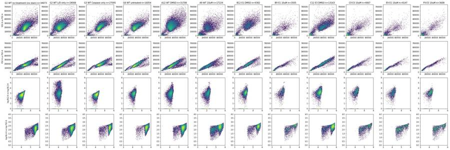
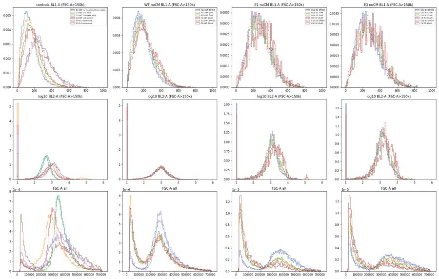
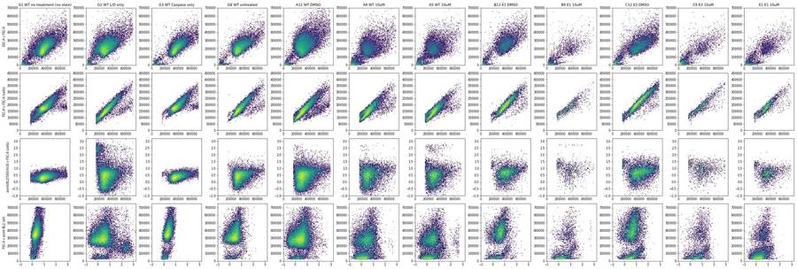
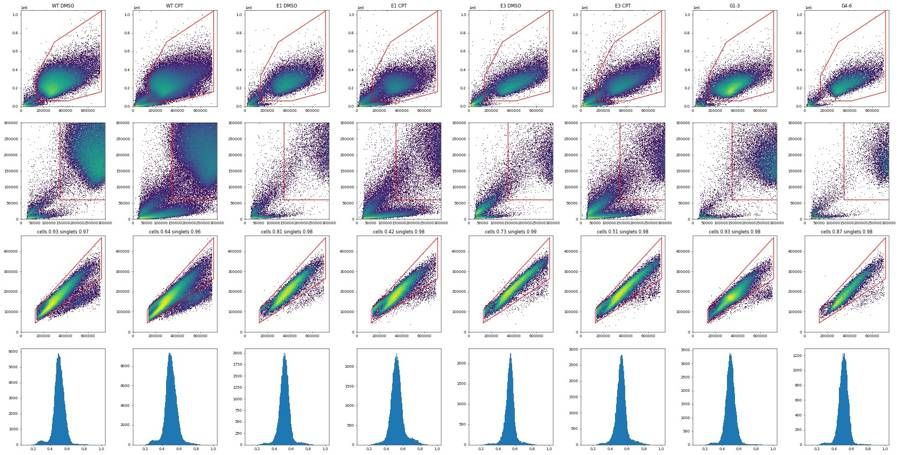
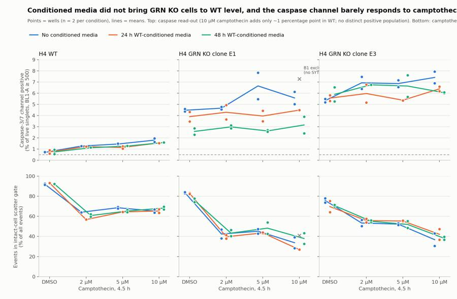
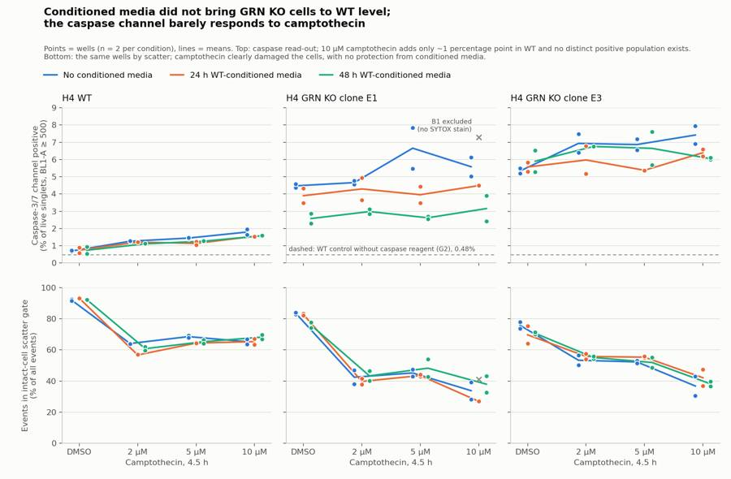

B1_flowkit · Fable 5.2 · attempt wsjKEhk
Batch fb1 · job fb1_B_base_conditioned_media_flowkit_claude-fable-5-2 · trial B_base_conditioned_media_flowkit__wsjKEhk. Long tool outputs are cut at 6,000 characters.
Score
0.31
0.31
Minutes
12.6
12.6
Agent cost
$4.95
$4.95
Steps
97
97
Screenshots / images
6
6
2
tool call · Bash
cd /task; cat inputs/plan.md; echo ----; cat inputs/plate_layout.csv; ls inputs/raw | head -100; ls -la outputs
3
tool output
# Plan: Caspase activity assay development with progranulin conditioned media (H4 cells) Source: lab notebook entry (target PGRN; assay development; cell-based; flow; cell type H4). This plan covers the plate acquired on 16-Dec-2022. People's names, and all text written after acquisition, have been removed. ## Purpose To determine if progranulin conditioned media can restore wild-type levels of caspase activity in H4 GRN KO cells. ## Rationale Previous literature evidence suggests that applying exogenous progranulin to cells can restore molecular phenotypes in progranulin deficient lines. Our previous experiment with caspase activity on H4 GRN WT and KO cells showed that GRN KO lines had increased caspase activity. This difference was enhanced after campothesin challenge in both GRN WT and KO cells. In this experiment, we will determine if applying conditioned media from WT cell lines onto KO lines can reduce caspase activity closer to WT levels. ## Materials - H4 WT cells - H4 PGRN KO E1 - H4 PGRN KO E3 - H4 media (DMEM + 10% FBS) - CellEvent Caspase-3/7 Green Flow Cytometry Assay Kit - SYTOX AAdvanced Dead Cell Stain - Camptothecin ## Protocol ### 2022-12-12: conditioned-media donor plate - Passage WT H4 cells into 96 well plate (10K/well). This plate is the one the media is collected from. Donor plate map, as written (12 columns per line): ``` WT WT WT WT WT WT WT WT WT WT WT WT WT WT WT WT WT WT WT WT WT WT WT WT WT WT WT WT WT WT WT WT WT WT WT WT 24hr WT WT WT WT WT WT WT WT WT WT WT WT WT WT WT WT WT WT WT WT WT WT WT WT WT WT WT WT WT WT WT WT WT WT WT WT 48hr ``` Red = 24 hr media collection; Purple = 48hr media collection. Cell colours of this map were not preserved in the export. ### 2022-12-13 2. Collect media from 24hr wells 3. Spin down at 2000xg for 10min @4C and collect into fresh plate ### 2022-12-14 4. Collect media from 48hr wells 5. Spin down at 2000xg for 10min. Collect into fresh plate - Passage all H4 lines into 96 well plate for assay (10K/well) according to the assay plate map below. ### Assay plate map The map is as written. Row letters A–H and column numbers 1–12 have been added for orientation. | | 1 | 2 | 3 | 4 | 5 | 6 | 7 | 8 | 9 | 10 | 11 | 12 | |---|---|---|---|---|---|---|---|---|---|---|---|---| | A | WT 10uM | WT 5uM | WT 2uM | WT DMSO | WT 10uM | WT 5uM | WT 2uM | WT DMSO | WT 10uM | WT 5uM | WT 2uM | WT DMSO | | B | E1 10uM | E1 5uM | E1 2uM | E1 DMSO | E1 10uM | E1 5uM | E1 2uM | E1 DMSO | E1 10uM | E1 5uM | E1 2uM | E1 DMSO | | C | E3 10uM | E3 5uM | E3 2uM | E3 DMSO | E3 10uM | E3 5uM | E3 2uM | E3 DMSO | E3 10uM | E3 5uM | E3 2uM | E3 DMSO | | D | WT 10uM | WT 5uM | WT 2uM | WT DMSO | WT 10uM | WT 5uM | WT 2uM | WT DMSO | WT 10uM | WT 5uM | WT 2uM | WT DMSO | | E | E1 10uM | E1 5uM | E1 2uM | E1 DMSO | E1 10uM | E1 5uM | E1 2uM | E1 DMSO | E1 10uM | E1 5uM | E1 2uM | E1 DMSO | | F | E3 10uM | E3 5uM | E3 2uM | E3 DMSO | E3 10uM | E3 5uM | E3 2uM | E3 DMSO | E3 10uM | E3 5uM | E3 2uM | E3 DMSO | | G | WT no treatment (no stain) | WT L/D only | WT Caspase only | E1 untreated | E3 untreated | WT untreated | | | | | | | | H | 24hr conditioned media | | | | 48hr conditoned media | | | | No condtioned media | | | | Cell colours in the notebook: - Rows A–F, columns 1–4: blue (#94B5DD). - Rows A–F, columns 5–8: green (#D5F0AD). - Rows A–F, columns 9–12: uncoloured. - Row G: uncoloured. - Row H: "24hr conditioned media" is blue; "48hr conditoned media" is green; "No condtioned media" is uncoloured. ### 2022-12-15 6. Rinse wells with DMEM and then add conditioned media ### 2022-12-16 7. Add camptothecin to wells at indicated dose. Incubate for 4.5hr 8. Run flow ### Staining and acquisition (assay protocol as written in this entry) - Aspirate media and wash with PBS - Add 150uL trypsin incubate for 5min - Add 75uL FBS and collect into 96w round bottom plate - spin down 200xg for 5min - Add 200uL of Cell Event Caspase 3/7 Detection reagent (1:1000) in flow staining buffer. Incubate for 30min at 37C - Prepare SYTOX AAdvanced Dead Cell Stain at 100uM concentration by adding 1000uL DMSO to stain. Mix well - During the final 5 minutes of 30min Caspase incubation add 2uL of the 100uM Dead Cell stain (final concentration of 1uM) - Analyze the samples without fixing. Flow cytometer settings: FSC-20; SSC-290; BL1 (caspase)-225, BL2 (AAddvanced Dead Cell Stain)-350 ## Acquisition - Instrument: Thermo Attune NxT. - Date: 16-Dec-2022. - Files: 78 FCS files, one per well (A1–F12 and G1–G6). ---- file,well,sample,cell_line,camptothecin,conditioned_media Caspase-assay-2-mlk(1)_caspase_Group_A1.fcs,A1,WT 10uM,WT,10uM,24hr conditioned media Caspase-assay-2-mlk(1)_caspase_Group_A2.fcs,A2,WT 5uM,WT,5uM,24hr conditioned media Caspase-assay-2-mlk(1)_caspase_Group_A3.fcs,A3,WT 2uM,WT,2uM,24hr conditioned media Caspase-assay-2-mlk(1)_caspase_Group_A4.fcs,A4,WT DMSO,WT,DMSO,24hr conditioned media Caspase-assay-2-mlk(1)_caspase_Group_A5.fcs,A5,WT 10uM,WT,10uM,48hr conditioned media Caspase-assay-2-mlk(1)_caspase_Group_A6.fcs,A6,WT 5uM,WT,5uM,48hr conditioned media Caspase-assay-2-mlk(1)_caspase_Group_A7.fcs,A7,WT 2uM,WT,2uM,48hr conditioned media Caspase-assay-2-mlk(1)_caspase_Group_A8.fcs,A8,WT DMSO,WT,DMSO,48hr conditioned media Caspase-assay-2-mlk(1)_caspase_Group_A9.fcs,A9,WT 10uM,WT,10uM,No conditioned media Caspase-assay-2-mlk(1)_caspase_Group_A10.fcs,A10,WT 5uM,WT,5uM,No conditioned media Caspase-assay-2-mlk(1)_caspase_Group_A11.fcs,A11,WT 2uM,WT,2uM,No conditioned media Caspase-assay-2-mlk(1)_caspase_Group_A12.fcs,A12,WT DMSO,WT,DMSO,No conditioned media Caspase-assay-2-mlk(1)_caspase_Group_B1.fcs,B1,E1 10uM,E1,10uM,24hr conditioned media Caspase-assay-2-mlk(1)_caspase_Group_B2.fcs,B2,E1 5uM,E1,5uM,24hr conditioned media Caspase-assay-2-mlk(1)_caspase_Group_B3.fcs,B3,E1 2uM,E1,2uM,24hr conditioned media Caspase-assay-2-mlk(1)_caspase_Group_B4.fcs,B4,E1 DMSO,E1,DMSO,24hr conditioned media Cas … [8,816 more characters not shown]
4
tool call · Bash
cd /task; mkdir -p work; cat > work/explore.py <<'EOF'
import flowkit as fk, flowio, numpy as np, pandas as pd, glob, os, re
lay = pd.read_csv('inputs/plate_layout.csv')
rows=[]
for i,r in lay.iterrows():
p='inputs/raw/'+r.file
fd=flowio.FlowData(p)
t=fd.text
if i==0:
for k in sorted(t):
v=t[k]
print(k, v[:200])
s=fk.Sample(p, ignore_offset_error=True)
df=s.as_dataframe(source='raw'); df.columns=[c[0] for c in df.columns]
d=dict(well=r.well, sample=r['sample'], n=len(df), vol=t.get('vol',t.get('$vol')), btim=t.get('btim'), etim=t.get('etim'),
tmax=df['Time'].max(), tmin=df['Time'].min())
for c in ['FSC-A','SSC-A','BL1-A','BL2-A']:
d[c+'_med']=df[c].median(); d[c+'_max']=df[c].max(); d[c+'_p99']=df[c].quantile(.99)
rows.append(d)
out=pd.DataFrame(rows)
pd.set_option('display.width',250); pd.set_option('display.max_rows',200); pd.set_option('display.max_columns',50)
print(out.round(0).to_string())
out.to_csv('work/explore.csv',index=False)
EOF
python3 work/explore.py 2>&1 | tail -2205
tool output
#winext 0 beginanalysis 000000000000 begindata 000000008192 beginstext 000000000000 btim 14:27:29 byteord 1,2,3,4 cells NA com NA cyt 0A29009 Attune NxT Acoustic Focusing Cytometer (Lasers: BRV6Y) cytsn 2AFC228071019 datatype F date 16-Dec-2022 endanalysis 000000000000 enddata 000001616031 endstext 000000000000 etim 14:27:46 exp NA fil A1.fcs hostid SEA11065ATTUNE inst NA lost 0 mode L nextdata 000000000000 op Jeff Huang originality Original p10b 32 p10e 0,0 p10f NA p10l 488 p10n FSC-W p10r 1024 p10s FSC-W p10v 20 p11b 32 p11e 0,0 p11f NA p11l 488 p11n SSC-W p11r 1024 p11s SSC-W p11v 290 p12b 32 p12e 0,0 p12f NA p12l 488 p12n BL1-W p12r 1024 p12s AAV-GFP-GFP-W p12v 225 p13b 32 p13e 0,0 p13f NA p13l 488 p13n BL2-W p13r 1024 p13s AAdvanced livedead-W p13v 350 p1b 32 p1e 0,0 p1f NA p1l NA p1n Time p1r 67108864 p1s Time p1v NA p2b 32 p2e 0,0 p2f NA p2l 488 p2n FSC-A p2r 1048576 p2s FSC-A p2v 20 p3b 32 p3e 0,0 p3f NA p3l 488 p3n SSC-A p3r 1048576 p3s SSC-A p3v 290 p4b 32 p4e 0,0 p4f NA p4l 488 p4n BL1-A p4r 1048576 p4s AAV-GFP-GFP-A p4v 225 p5b 32 p5e 0,0 p5f NA p5l 488 p5n BL2-A p5r 1048576 p5s AAdvanced livedead-A p5v 350 p6b 32 p6e 0,0 p6f NA p6l 488 p6n FSC-H p6r 1048576 p6s FSC-H p6v 20 p7b 32 p7e 0,0 p7f NA p7l 488 p7n SSC-H p7r 1048576 p7s SSC-H p7v 290 p8b 32 p8e 0,0 p8f NA p8l 488 p8n BL1-H p8r 1048576 p8s AAV-GFP-GFP-H p8v 225 p9b 32 p9e 0,0 p9f NA p9l 488 p9n BL2-H p9r 1048576 p9s AAdvanced livedead-H p9v 350 par 13 plateid NA platename Caspase-assay-2-mlk(1) proj caspase smno Group spillover 6,BL1-A,BL2-A,BL1-H,BL2-H,BL1-W,BL2-W,1.000000,0.000000,0.000000,0.000000,0.000000,0.000000,0.000000,1.000000,0.000000,0.000000,0.000000,0.000000,0.000000,0.000000,1.000000,0.000000,0.000000,0.000000, src NA sys SEA11065ATTUNE Microsoft Windows 10 Enterprise LTSC timestep 0.001 tot 30920 vol 140000 wellid A1 well sample n vol btim etim tmax tmin FSC-A_med FSC-A_max FSC-A_p99 SSC-A_med SSC-A_max SSC-A_p99 BL1-A_med BL1-A_max BL1-A_p99 BL2-A_med BL2-A_max BL2-A_p99 0 A1 WT 10uM 30920 140000 14:27:29 14:27:46 17.0 0.0 244758.0 707042.0 637162.0 177361.0 1048105.0 494376.0 152.0 805.0 539.0 418.0 185690.0 14436.0 1 A2 WT 5uM 31266 138000 14:28:13 14:28:30 17.0 0.0 233650.0 706370.0 587050.0 180769.0 923717.0 477737.0 147.0 795.0 513.0 365.0 139493.0 15966.0 2 A3 WT 2uM 38748 140000 14:28:57 14:29:14 17.0 0.0 211445.0 705341.0 581900.0 152262.0 1033712.0 479532.0 142.0 804.0 509.0 327.0 134907.0 9449.0 3 A4 WT DMSO 34861 140000 14:29:41 14:29:58 17.0 0.0 283227.0 710472.0 608852.0 236689.0 1048575.0 534393.0 159.0 797.0 474.0 403.0 164281.0 12930.0 4 A5 WT 10uM 14011 140000 14:30:24 14:30:41 17.0 0.0 243639.0 698538.0 592938.0 164373.0 1048575.0 450140.0 160.0 750.0 529.0 522.0 166916.0 72871.0 5 A6 WT 5uM 25118 140000 14:31:08 14:31:25 17.0 0.0 240093.0 704259.0 590397.0 178380.0 1048575.0 480459.0 151.0 794.0 521.0 439.0 130930.0 12495.0 6 A7 WT 2uM 27544 138000 14:31:52 14:32:09 16.0 0.0 228768.0 703561.0 585852.0 173797.0 798480.0 491112.0 149.0 803.0 506.0 409.0 160488.0 10087.0 7 A8 WT DMSO 30067 133000 14:32:36 14:32:53 16.0 0.0 285647.0 709534.0 618307.0 233735.0 1048575.0 540556.0 159.0 810.0 482.0 468.0 154894.0 10434.0 8 A9 WT 10uM 17224 138000 14:33:19 14:33:37 17.0 0.0 238900.0 708799.0 620727.0 155498.0 1048575.0 461955.0 169.0 769.0 537.0 524.0 166596.0 10493.0 9 A10 WT 5uM 24604 140000 14:34:03 14:34:20 17.0 0.0 248478.0 709434.0 621314.0 184166.0 957740.0 495840.0 164.0 785.0 527.0 518.0 122435.0 10698.0 10 A11 WT 2uM 38346 136000 14:34:47 14:35:04 16.0 0.0 241298.0 708280.0 615968.0 179418.0 1048575.0 490022.0 156.0 810.0 517.0 439.0 126939.0 8827.0 11 A12 WT DMSO 31708 140000 14:35:31 14:35:48 17.0 0.0 289891.0 710978.0 634910.0 229642.0 1048575.0 547563.0 161.0 787.0 493.0 565.0 147803.0 13295.0 12 B1 E1 10uM 9849 141000 14:36:14 14:36:31 17.0 0.0 135209.0 705050.0 631057.0 28498.0 1048575.0 440048.0 142.0 803.0 596.0 242.0 73746.0 1897.0 13 B2 E1 5uM 10963 140000 14:36:58 14:37:15 17.0 0.0 122741.0 703393.0 601308.0 32873.0 1048575.0 431081.0 151.0 804.0 561.0 502.0 72999.0 9009.0 14 B3 E1 2uM 14921 140000 14:37:42 14:37:59 17.0 0.0 123483.0 704964.0 605542.0 22581.0 851847.0 429621.0 153.0 802.0 561.0 477.0 53231.0 5912.0 15 B4 E1 DMSO 12172 140000 14:38:25 14:38:43 17.0 0.0 379196.0 705244.0 656166.0 244806.0 1048575.0 506305.0 222.0 801.0 580.0 893.0 70747.0 8151.0 16 B5 E1 10uM 5068 138000 14:39:09 14:39:27 17.0 0.0 123780.0 701214.0 609634.0 59827.0 759936.0 434129.0 152.0 712.0 553.0 664.0 179897.0 15838.0 17 B6 E1 5uM 9638 141000 14:39:53 14:40:10 17.0 0.0 212752.0 709825.0 616529.0 150582.0 1048575.0 478883.0 173.0 781.0 559.0 678.0 199435.0 10187.0 18 B7 E1 2uM 13360 140000 14:40:37 14:40:54 17.0 0. … [12,818 more characters not shown]
7
tool call · Bash
cd /task; cat > work/load.py <<'EOF'
import flowkit as fk, numpy as np, pandas as pd
lay = pd.read_csv('/task/inputs/plate_layout.csv')
_cache={}
def get(well):
if well not in _cache:
r=lay[lay.well==well].iloc[0]
s=fk.Sample('/task/inputs/raw/'+r.file, ignore_offset_error=True)
df=s.as_dataframe(source='raw'); df.columns=[c[0] for c in df.columns]
_cache[well]=df
return _cache[well]
EOF
cat > work/p1.py <<'EOF'
import sys; sys.path.insert(0,'/task/work')
from load import *
import matplotlib; matplotlib.use('Agg'); import matplotlib.pyplot as plt
wells=['G1','G2','G3','G6','A12','A9','B12','B9','C12','C9','E9','F9']
fig,axs=plt.subplots(4,len(wells),figsize=(3*len(wells),12))
for j,w in enumerate(wells):
d=get(w)
axs[0,j].hist2d(d['FSC-A'],d['SSC-A'],bins=150,range=[[0,750000],[0,750000]],norm=matplotlib.colors.LogNorm()); axs[0,j].set_title(f"{w} {lay[lay.well==w]['sample'].iloc[0]} n={len(d)}")
axs[1,j].hist2d(d['FSC-A'],d['FSC-H'],bins=150,range=[[0,750000],[0,750000]],norm=matplotlib.colors.LogNorm())
x=np.log10(np.clip(d['BL1-A'],1,None)); y=np.log10(np.clip(d['BL2-A'],1,None))
axs[2,j].hist2d(x,y,bins=150,range=[[0,6],[0,6]],norm=matplotlib.colors.LogNorm())
axs[3,j].hist2d(np.log10(np.clip(d['FSC-A'],1,None)),x,bins=150,range=[[3,6],[0,4]],norm=matplotlib.colors.LogNorm())
axs[0,0].set_ylabel('SSC-A vs FSC-A'); axs[1,0].set_ylabel('FSC-H vs FSC-A'); axs[2,0].set_ylabel('log BL2-A vs log BL1-A'); axs[3,0].set_ylabel('log BL1-A vs log FSC-A')
plt.tight_layout(); plt.savefig('/task/work/p1.png',dpi=60)
for w in ['G1','G3','A9','B9','B12']:
d=get(w)
print(w, d[['BL1-A','BL1-H','BL1-W','BL2-A','BL2-H','FSC-A','FSC-H','FSC-W','SSC-A']].describe(percentiles=[.01,.05,.25,.5,.75,.95,.99,.999]).round(0).to_string())
EOF
python3 work/p1.py8
tool output
G1 BL1-A BL1-H BL1-W BL2-A BL2-H FSC-A FSC-H FSC-W SSC-A count 34073.0 34073.0 34073.0 34073.0 34073.0 34073.0 34073.0 34073.0 34073.0 mean 147.0 117.0 0.0 476.0 322.0 351839.0 172406.0 146.0 206792.0 std 90.0 46.0 0.0 352.0 203.0 108126.0 46848.0 22.0 84651.0 min 4.0 21.0 0.0 -940.0 2.0 20992.0 25034.0 40.0 -63578.0 1% 18.0 48.0 0.0 -51.0 60.0 33207.0 31342.0 66.0 3382.0 5% 36.0 61.0 0.0 62.0 105.0 111373.0 73344.0 102.0 48573.0 25% 82.0 86.0 0.0 255.0 191.0 318328.0 158613.0 139.0 159437.0 50% 131.0 109.0 0.0 406.0 274.0 353726.0 174051.0 150.0 201166.0 75% 194.0 138.0 0.0 610.0 393.0 402765.0 191900.0 157.0 251119.0 95% 313.0 199.0 0.0 1122.0 704.0 516821.0 247470.0 168.0 344109.0 99% 437.0 276.0 0.0 1782.0 1117.0 649460.0 294752.0 199.0 453167.0 99.9% 605.0 386.0 0.0 2657.0 1647.0 701043.0 340323.0 282.0 621557.0 max 773.0 570.0 0.0 4715.0 2473.0 710099.0 414202.0 322.0 1048575.0 G3 BL1-A BL1-H BL1-W BL2-A BL2-H FSC-A FSC-H FSC-W SSC-A count 27095.0 27095.0 27095.0 27095.0 27095.0 27095.0 27095.0 27095.0 27095.0 mean 183.0 136.0 0.0 524.0 353.0 362174.0 180598.0 146.0 202750.0 std 104.0 53.0 0.0 352.0 200.0 109019.0 47225.0 22.0 82095.0 min 4.0 21.0 0.0 -371.0 0.0 15526.0 25211.0 37.0 -2373.0 1% 23.0 51.0 0.0 -57.0 75.0 31857.0 30488.0 64.0 2728.0 5% 46.0 69.0 0.0 74.0 126.0 87975.0 75078.0 98.0 18033.0 25% 107.0 99.0 0.0 292.0 221.0 325980.0 164300.0 141.0 159156.0 50% 167.0 127.0 0.0 465.0 310.0 360762.0 178683.0 151.0 199627.0 75% 240.0 161.0 0.0 681.0 432.0 413030.0 201264.0 157.0 248128.0 95% 379.0 234.0 0.0 1177.0 731.0 528939.0 256760.0 167.0 333636.0 99% 500.0 312.0 0.0 1735.0 1082.0 650545.0 300290.0 190.0 424055.0 99.9% 646.0 425.0 0.0 2508.0 1560.0 701545.0 345559.0 280.0 543826.0 max 769.0 577.0 0.0 3208.0 2208.0 710871.0 379555.0 313.0 1048575.0 A9 BL1-A BL1-H BL1-W BL2-A BL2-H FSC-A FSC-H FSC-W SSC-A count 17224.0 17224.0 17224.0 17224.0 17224.0 17224.0 17224.0 17224.0 17224.0 mean 191.0 148.0 0.0 1217.0 1053.0 228027.0 124248.0 118.0 148455.0 std 125.0 72.0 0.0 4683.0 2847.0 147088.0 64583.0 32.0 119756.0 min 4.0 16.0 0.0 -23737.0 0.0 15331.0 25129.0 37.0 -10034.0 1% 10.0 44.0 0.0 -1224.0 79.0 26286.0 26204.0 52.0 1943.0 5% 28.0 59.0 0.0 -581.0 211.0 32341.0 30809.0 64.0 3387.0 25% 92.0 94.0 0.0 18.0 441.0 80867.0 68646.0 96.0 19447.0 50% 169.0 133.0 0.0 524.0 658.0 238900.0 125389.0 121.0 155498.0 75% 267.0 184.0 0.0 1362.0 967.0 318646.0 166065.0 140.0 228105.0 95% 426.0 295.0 0.0 4464.0 2571.0 492021.0 234463.0 163.0 349599.0 99% 537.0 365.0 0.0 10493.0 7091.0 620727.0 298136.0 193.0 461955.0 99.9% 671.0 437.0 0.0 88245.0 54600.0 693415.0 356401.0 263.0 622288.0 max 769.0 509.0 0.0 166596.0 101502.0 708799.0 397541.0 375.0 1048575.0 B9 BL1-A BL1-H BL1-W BL2-A BL2-H FSC-A FSC-H FSC-W SSC-A count 3505.0 3505.0 3505.0 3505.0 3505.0 3505.0 3505.0 3505.0 3505.0 mean 189.0 151.0 0.0 2328.0 1656.0 178366.0 107465.0 109.0 101897.0 std 144.0 87.0 0.0 9214.0 5252.0 156976.0 72196.0 34.0 113280.0 min 4.0 27.0 0.0 -24201.0 0.0 14107.0 25150.0 38.0 -10897.0 1% 7.0 41.0 0.0 -837.0 55.0 25926.0 25734.0 52.0 1884.0 5% 21.0 53.0 0.0 -393.0 197.0 29490.0 28026.0 60.0 3005.0 25% 69.0 82.0 0.0 181.0 415.0 49656.0 44396.0 81.0 8129.0 50% 150.0 123.0 0.0 837.0 708.0 106105.0 85652.0 105.0 47996.0 75% 288.0 206.0 0.0 2320.0 1474.0 306014.0 163027.0 136.0 183448.0 95% 458.0 320.0 0.0 6834.0 4576.0 474183.0 241402.0 161.0 304582.0 99% 580.0 388.0 0.0 16369.0 11952.0 616150.0 299989.0 180.0 431484.0 99.9% 705.0 473.0 0.0 133745.0 79287.0 701700.0 369280.0 225.0 662134.0 max 770.0 485.0 0.0 155034.0 84045.0 704489.0 385129.0 375.0 1048575.0 B12 BL1-A BL1-H BL1-W BL2-A BL2-H FSC-A FSC-H FSC-W SSC-A count 9382.0 9382.0 9382.0 9382.0 9382.0 9382.0 9382.0 9382.0 9382.0 mean 243.0 172.0 0.0 1660.0 1128.0 336113.0 176459.0 131.0 237119.0 std 133.0 71.0 0.0 3509.0 2069.0 154489.0 73789.0 28.0 121752.0 min 4.0 29.0 0.0 -15603.0 0.0 20769.0 25152.0 46.0 -54859.0 1% 16.0 50.0 0.0 -778.0 163.0 28131.0 26703.0 58.0 2673.0 5% 46.0 71.0 0.0 -256.0 328.0 39737.0 35538.0 73.0 6184.0 25% 144.0 122.0 0.0 432.0 589.0 271862.0 135495.0 120.0 178920.0 50% 232.0 163.0 0.0 1024.0 788.0 356780.0 185372.0 133.0 246169.0 75% 325.0 211.0 0.0 1852.0 1054.0 433007.0 226829.0 151.0 311469.0 95% 481.0 299.0 … [329 more characters not shown]
10
tool call · Read
{
"file_path": "/task/work/p1.png"
}11
tool output

13
tool call · Bash
cd /task; cat > work/p2.py <<'EOF'
import sys; sys.path.insert(0,'/task/work')
from load import *
import matplotlib; matplotlib.use('Agg'); import matplotlib.pyplot as plt
fig,axs=plt.subplots(3,4,figsize=(22,14))
groups={'controls':['G1','G2','G3','G6','G4','G5'],'WT noCM':['A12','A11','A10','A9','D12','D9'],'E1 noCM':['B12','B11','B10','B9','E12','E9'],'E3 noCM':['C12','C11','C10','C9','F12','F9']}
for j,(g,ws) in enumerate(groups.items()):
for w in ws:
d=get(w); big=d[(d['FSC-A']>150000)]
axs[0,j].hist(big['BL1-A'],bins=np.linspace(0,1000,101),histtype='step',density=True,label=f"{w} {lay[lay.well==w]['sample'].iloc[0]}")
axs[1,j].hist(np.log10(np.clip(big['BL2-A'],10,None)),bins=np.linspace(1,6,121),histtype='step',density=True,label=w)
axs[2,j].hist(d['FSC-A'],bins=np.linspace(0,720000,121),histtype='step',density=True,label=w)
axs[0,j].set_title(g+' BL1-A (FSC-A>150k)'); axs[0,j].legend(fontsize=7); axs[1,j].set_title('log10 BL2-A (FSC-A>150k)'); axs[2,j].set_title('FSC-A all')
plt.tight_layout(); plt.savefig('/task/work/p2.png',dpi=60)
# sharp edge check
for w in ['G1','A9','B12']:
d=get(w)
print(w, 'BL1-A top values', np.sort(d['BL1-A'].values)[-8:].round(0), 'FSC-A top', np.sort(d['FSC-A'].values)[-5:].round(0), 'FSC-H top',np.sort(d['FSC-H'].values)[-3:].round(0))
print((d['BL1-A']/d['FSC-A']).describe(percentiles=[.5,.99,.999]).round(5).to_dict())
print('n SSC sat',(d['SSC-A']>=1048575).sum(), 'neg BL2', (d['BL2-A']<0).mean())
EOF
python3 work/p2.py14
tool output
G1 BL1-A top values [695. 701. 701. 717. 730. 732. 753. 773.] FSC-A top [707504. 708111. 708207. 708744. 710099.] FSC-H top [371855. 388427. 414202.]
{'count': 34073.0, 'mean': 0.00046, 'std': 0.00036, 'min': 5e-05, '50%': 0.00039, '99%': 0.00192, '99.9%': 0.00381, 'max': 0.00634}
n SSC sat 3 neg BL2 0.023214862207613065
A9 BL1-A top values [716. 719. 721. 737. 762. 763. 768. 769.] FSC-A top [699033. 703294. 703741. 703834. 708799.] FSC-H top [394567. 395110. 397541.]
{'count': 17224.0, 'mean': 0.00116, 'std': 0.00103, 'min': 6e-05, '50%': 0.00087, '99%': 0.00527, '99.9%': 0.00881, 'max': 0.01179}
n SSC sat 2 neg BL2 0.24129122155132374
B12 BL1-A top values [719. 720. 731. 731. 740. 766. 776. 812.] FSC-A top [703640. 704098. 705284. 706666. 707410.] FSC-H top [405009. 407574. 412219.]
{'count': 9382.0, 'mean': 0.00092, 'std': 0.00084, 'min': 5e-05, '50%': 0.00071, '99%': 0.00454, '99.9%': 0.00836, 'max': 0.00991}
n SSC sat 1 neg BL2 0.103282882114687715
thinking
The caspase channel (BL1) looks like autofluorescence in every well, so I'm checking the histograms against the unstained and single-stain controls before gating.
16
tool call · Read
{
"file_path": "/task/work/p2.png"
}17
tool output

19
tool call · Bash
cd /task; cat > work/qc.py <<'EOF'
import sys; sys.path.insert(0,'/task/work')
from load import *
rows=[]
for w in lay.well:
d=get(w); t=d['Time'].values
edges=np.arange(0,np.ceil(t.max())+1,1.0)
h,_=np.histogram(t,bins=edges)
hh=h[1:-1] if len(h)>3 else h
# drift: median FSC and BL2 first vs last third
q=np.quantile(t,[1/3,2/3])
a=d[t<q[0]]; c=d[t>q[1]]
cellfrac=lambda x: (x['FSC-A']>150000).mean()
rows.append(dict(well=w,n=len(d),dur=t.max()-t.min(),tmin=t.min(),rate_med=np.median(hh),rate_min=hh.min(),rate_max=hh.max(),cv=hh.std()/hh.mean(),
first_last=h[0]/max(h[-2],1), maxgap=np.diff(np.sort(t)).max(),
cellfrac_first=cellfrac(a),cellfrac_last=cellfrac(c),
bl1_first=a['BL1-A'].median(),bl1_last=c['BL1-A'].median(),bl2_first=a['BL2-A'].median(),bl2_last=c['BL2-A'].median(),
fsc_first=a['FSC-A'].median(), fsc_last=c['FSC-A'].median(),
ssc_sat=(d['SSC-A']>=1048575).sum(), fsc_hi=(d['FSC-A']>700000).sum(), bl2_neg=(d['BL2-A']<0).mean(), bl2_gt1e5=(d['BL2-A']>1e5).sum()))
q=pd.DataFrame(rows)
pd.set_option('display.width',300); pd.set_option('display.max_rows',200); pd.set_option('display.max_columns',50)
print(q.round(2).to_string())
q.to_csv('/task/work/qc.csv',index=False)
EOF
python3 work/qc.py20
tool output
well n dur tmin rate_med rate_min rate_max cv first_last maxgap cellfrac_first cellfrac_last bl1_first bl1_last bl2_first bl2_last fsc_first fsc_last ssc_sat fsc_hi bl2_neg bl2_gt1e5 0 A1 30920 16.71 0.01 1872.0 1422 2427 0.15 1.10 0.01 0.67 0.69 146.0 152.0 340.0 498.0 240122.5 245078.0 0 18 0.27 29 1 A2 31266 16.56 0.01 1957.0 1145 2547 0.19 1.56 0.02 0.66 0.64 144.0 143.0 296.0 384.0 229718.0 228178.0 0 12 0.28 24 2 A3 38748 16.76 0.01 2285.0 1910 2877 0.12 1.04 0.00 0.57 0.59 139.0 141.0 273.0 349.5 199221.0 207861.5 0 8 0.29 9 3 A4 34861 16.72 0.02 2008.0 1484 3012 0.20 1.03 0.01 0.93 0.93 157.0 159.0 296.0 453.0 279744.0 287122.5 1 20 0.29 31 4 A5 14011 16.57 0.02 843.0 657 1138 0.15 1.14 0.03 0.65 0.68 156.0 161.0 430.5 535.0 234464.0 244608.5 1 0 0.24 77 5 A6 25118 16.71 0.01 1465.0 1179 1973 0.15 0.96 0.01 0.66 0.68 147.0 150.0 355.0 477.0 233087.0 242729.0 1 3 0.25 7 6 A7 27544 16.48 0.02 1700.0 1382 1968 0.09 0.79 0.01 0.62 0.64 147.0 147.0 321.0 411.0 223289.0 227535.0 0 3 0.26 11 7 A8 30067 15.84 0.02 1801.5 1379 2630 0.20 1.20 0.01 0.91 0.92 158.0 159.0 329.0 533.0 280196.5 288444.0 2 20 0.25 15 8 A9 17224 16.50 0.02 1056.0 760 1308 0.14 1.12 0.03 0.64 0.62 165.5 162.0 435.0 536.0 234464.0 230095.0 2 4 0.24 16 9 A10 24604 16.62 0.01 1445.0 1127 1877 0.14 1.09 0.01 0.69 0.69 161.0 163.0 422.0 569.0 243777.0 249298.0 0 11 0.22 11 10 A11 38346 16.32 0.01 2231.0 1788 3336 0.17 1.12 0.01 0.64 0.65 153.0 156.0 360.0 463.0 232745.5 240925.0 2 17 0.24 3 11 A12 31708 16.59 0.01 1913.0 1478 2547 0.16 0.93 0.06 0.92 0.92 158.0 161.0 457.0 575.0 286000.0 291675.0 2 30 0.21 13 12 B1 9849 16.78 0.01 594.0 488 690 0.09 1.02 0.01 0.46 0.47 137.0 142.0 216.0 237.0 127574.0 132580.0 2 4 0.11 0 13 B2 10963 16.72 0.02 667.0 546 783 0.10 1.00 0.03 0.44 0.45 144.0 146.0 440.5 502.0 108480.5 110893.0 1 2 0.20 0 14 B3 14921 16.74 0.01 917.0 779 1053 0.09 0.93 0.02 0.44 0.43 150.0 142.0 425.0 454.0 114165.5 105692.0 0 5 0.19 0 15 B4 12172 16.56 0.02 741.0 554 1034 0.17 0.81 0.06 0.83 0.82 222.0 219.0 801.0 882.0 373986.0 379815.0 2 7 0.09 0 16 B5 5068 16.54 0.02 314.0 252 370 0.11 0.94 0.09 0.42 0.45 145.0 146.0 595.0 638.0 104548.0 122670.0 0 2 0.17 30 17 B6 9638 16.82 0.01 590.0 475 716 0.11 0.82 0.08 0.54 0.53 168.0 167.0 604.0 641.0 190921.0 185171.0 1 4 0.16 9 18 B7 13360 16.71 0.01 827.0 686 1010 0.11 0.94 0.03 0.47 0.47 158.0 158.0 491.0 556.0 125598.5 128287.0 2 4 0.19 0 19 B8 11210 16.66 0.01 668.0 529 917 0.17 0.87 0.11 0.75 0.77 204.0 207.0 831.5 1001.0 324727.0 330974.0 1 9 0.12 6 20 B9 3505 16.80 0.03 211.0 178 257 0.11 0.94 0.09 0.39 0.39 147.5 142.0 705.0 831.0 92368.0 98761.0 1 6 0.17 16 21 B10 8268 16.53 0.01 490.0 433 652 0.13 1.13 0.07 0.47 0.48 160.0 160.0 635.0 659.5 123953.0 129621.5 0 1 0.18 0 22 B11 10609 16.69 0.02 621.0 542 787 0.12 1.01 0.01 0.48 0.48 165.0 162.0 550.5 654.5 131672.0 133932.0 1 3 0.17 0 23 B12 9382 16.34 0.02 584.0 371 815 0.22 1.31 0.10 0.83 0.82 229.0 231.0 910.0 1046.0 354833.0 354770.0 1 8 0.10 1 24 C1 7495 16.43 0.02 462.0 318 590 0.15 1.30 0.06 0.49 0.49 167.0 160.0 946.0 941.5 140803.0 144526.5 2 8 0.13 0 25 C2 10263 16.74 0.02 641.0 506 815 0.15 1.00 0.16 0.55 0.55 172.0 170.0 848.0 939.0 219751.0 210671.0 2 6 0.14 0 26 C3 8563 16.20 0.01 539.0 252 780 0.23 1.85 0.07 0.57 0.58 178.0 174.0 926.0 1006.5 257140.0 267673.5 2 14 … [10,984 more characters not shown]
22
tool call · Bash
cd /task; cat > work/p3.py <<'EOF'
import sys; sys.path.insert(0,'/task/work')
from load import *
allw=pd.concat([get(w).assign(well=w) for w in lay.well])
print(len(allw))
h,e=np.histogram(allw['BL1-A'],bins=np.arange(0,900,20)); print('BL1-A',dict(zip(e[:-1].astype(int),h)))
h,e=np.histogram(allw['BL1-H'],bins=np.arange(0,700,20)); print('BL1-H',dict(zip(e[:-1].astype(int),h)))
h,e=np.histogram(allw['FSC-A'],bins=np.arange(500000,760000,10000)); print('FSC-A',dict(zip(e[:-1].astype(int),h)))
h,e=np.histogram(allw['FSC-H'],bins=np.arange(0,460000,20000)); print('FSC-H',dict(zip(e[:-1].astype(int),h)))
h,e=np.histogram(allw['SSC-A'],bins=np.arange(500000,1100000,25000)); print('SSC-A',dict(zip(e[:-1].astype(int),h)))
h,e=np.histogram(allw['SSC-H'],bins=np.arange(0,1100000,50000)); print('SSC-H',dict(zip(e[:-1].astype(int),h)))
print(allw[['FSC-H','SSC-H','BL2-H','BL1-H','FSC-W','SSC-W','BL2-W']].describe().round(0).to_string())
# BL1-A relation to FSC-W and BL1-H
print(allw[['BL1-A','BL1-H','FSC-A','FSC-W','SSC-A','BL2-A']].corr(method='spearman').round(2))
# top BL1-A events
print(allw.nlargest(15,'BL1-A')[['well','FSC-A','FSC-H','FSC-W','SSC-A','BL1-A','BL1-H','BL2-A','BL2-H']].round(0).to_string())
print(allw.nlargest(15,'BL2-A')[['well','FSC-A','FSC-H','FSC-W','SSC-A','BL1-A','BL1-H','BL2-A','BL2-H']].round(0).to_string())
EOF
python3 work/p3.py23
tool output
1150506
BL1-A {0: 26930, 20: 52848, 40: 65550, 60: 73660, 80: 79395, 100: 81404, 120: 81946, 140: 79324, 160: 75461, 180: 70831, 200: 65005, 220: 58435, 240: 51976, 260: 46086, 280: 40184, 300: 35122, 320: 30379, 340: 25564, 360: 21431, 380: 17521, 400: 14521, 420: 11734, 440: 9385, 460: 7626, 480: 6069, 500: 4864, 520: 3871, 540: 3063, 560: 2325, 580: 1843, 600: 1528, 620: 1176, 640: 949, 660: 728, 680: 543, 700: 391, 720: 325, 740: 216, 760: 139, 780: 94, 800: 53, 820: 11, 840: 0, 860: 0}
BL1-H {0: 16, 20: 4519, 40: 41827, 60: 106320, 80: 150995, 100: 165849, 120: 158005, 140: 134616, 160: 105847, 180: 78072, 200: 56383, 220: 41159, 240: 30252, 260: 22324, 280: 16712, 300: 12123, 320: 8662, 340: 6057, 360: 3951, 380: 2604, 400: 1643, 420: 1007, 440: 617, 460: 389, 480: 222, 500: 139, 520: 61, 540: 43, 560: 26, 580: 18, 600: 8, 620: 8, 640: 11, 660: 2}
FSC-A {500000: 6965, 510000: 6430, 520000: 5854, 530000: 5305, 540000: 4948, 550000: 4615, 560000: 4201, 570000: 3783, 580000: 3607, 590000: 3219, 600000: 2987, 610000: 2809, 620000: 2529, 630000: 2257, 640000: 2050, 650000: 2097, 660000: 1898, 670000: 1746, 680000: 1614, 690000: 1484, 700000: 719, 710000: 11, 720000: 0, 730000: 0, 740000: 0}
FSC-H {0: 0, 20000: 137587, 40000: 99991, 60000: 65559, 80000: 70022, 100000: 91384, 120000: 113407, 140000: 133592, 160000: 132778, 180000: 97384, 200000: 68271, 220000: 48188, 240000: 33642, 260000: 23156, 280000: 15337, 300000: 9982, 320000: 5983, 340000: 2919, 360000: 1013, 380000: 241, 400000: 57, 420000: 8}
SSC-A {500000: 3155, 525000: 2181, 550000: 1579, 575000: 1088, 600000: 740, 625000: 547, 650000: 368, 675000: 266, 700000: 152, 725000: 110, 750000: 109, 775000: 75, 800000: 46, 825000: 46, 850000: 36, 875000: 29, 900000: 17, 925000: 15, 950000: 13, 975000: 11, 1000000: 10, 1025000: 107, 1050000: 0}
SSC-H {0: 344836, 50000: 137028, 100000: 412634, 150000: 203890, 200000: 41673, 250000: 7861, 300000: 1682, 350000: 439, 400000: 184, 450000: 94, 500000: 60, 550000: 23, 600000: 22, 650000: 23, 700000: 11, 750000: 4, 800000: 10, 850000: 2, 900000: 6, 950000: 3, 1000000: 21}
FSC-H SSC-H BL2-H BL1-H FSC-W SSC-W BL2-W
count 1150506.0 1150506.0 1150506.0 1150506.0 1150506.0 1150506.0 1150506.0
mean 136528.0 98891.0 1048.0 145.0 121.0 108.0 7.0
std 71990.0 67126.0 2919.0 67.0 32.0 42.0 19.0
min 25010.0 0.0 0.0 12.0 32.0 0.0 0.0
25% 75076.0 22224.0 449.0 98.0 99.0 72.0 0.0
50% 139562.0 112236.0 663.0 133.0 125.0 126.0 0.0
75% 183235.0 145629.0 937.0 178.0 145.0 133.0 0.0
max 461733.0 1048575.0 197842.0 1292.0 375.0 375.0 328.0
BL1-A BL1-H FSC-A FSC-W SSC-A BL2-A
BL1-A 1.00 0.77 0.51 0.46 0.52 0.43
BL1-H 0.77 1.00 0.43 0.37 0.45 0.41
FSC-A 0.51 0.43 1.00 0.90 0.79 0.28
FSC-W 0.46 0.37 0.90 1.00 0.67 0.24
SSC-A 0.52 0.45 0.79 0.67 1.00 0.30
BL2-A 0.43 0.41 0.28 0.24 0.30 1.00
well FSC-A FSC-H FSC-W SSC-A BL1-A BL1-H BL2-A BL2-H
3307 F6 697645.0 349810.0 172.0 533393.0 830.0 506.0 4084.0 1841.0
3507 C10 697614.0 223183.0 200.0 500332.0 828.0 400.0 4510.0 1847.0
3352 F7 700153.0 326177.0 158.0 610511.0 828.0 516.0 3412.0 1864.0
3275 F9 695847.0 300947.0 174.0 418563.0 827.0 466.0 1966.0 1261.0
16016 G2 694235.0 236892.0 196.0 1048575.0 826.0 370.0 196197.0 61099.0
3966 C10 690551.0 265452.0 158.0 885379.0 824.0 473.0 7414.0 2873.0
6450 G5 697034.0 205838.0 182.0 563023.0 824.0 353.0 74025.0 26494.0
1961 C1 694476.0 303594.0 153.0 677774.0 823.0 348.0 2776.0 1741.0
2615 C1 693176.0 325730.0 172.0 342116.0 823.0 520.0 3835.0 2181.0
8312 D12 699803.0 183312.0 213.0 625699.0 823.0 318.0 1372.0 1354.0
4474 F12 695688.0 317523.0 169.0 442218.0 822.0 492.0 3794.0 1755.0
2616 C2 694586.0 319731.0 144.0 690570.0 819.0 361.0 1708.0 1187.0
2442 C5 698763.0 303784.0 189.0 694421.0 818.0 365.0 26870.0 13309.0
6763 F8 696738.0 310065.0 143.0 687977.0 816.0 487.0 4939.0 2543.0
17181 D8 693514.0 341284.0 167.0 650331.0 815.0 566.0 3558.0 1766.0
well FSC-A FSC-H FSC-W SSC-A BL1-A BL1-H BL2-A BL2-H
226 G2 206196.0 72328.0 140.0 334123.0 320.0 96.0 469842.0 197842.0
19606 G2 379813.0 137041.0 270.0 510812.0 477.0 162.0 394541.0 143283.0
9662 G2 168511.0 37538.0 169.0 260978.0 114.0 112.0 364325.0 134011.0
16743 G2 104441.0 31558.0 129.0 251767.0 51.0 86.0 355905.0 135081.0
26433 G2 188932.0 95686.0 131.0 224911.0 308.0 138.0 352894.0 135608.0
16530 G2 606121.0 104990.0 272.0 761779.0 508.0 157.0 334474.0 88729.0
13617 G2 110683.0 40766.0 144.0 302790.0 152.0 97.0 332154.0 134125.0
8257 G2 90457.0 41430.0 112.0 228943.0 138.0 94.0 327884.0 168855.0
730 G2 269309.0 134871.0 149.0 300129.0 264.0 204.0 320575.0 115243.0
26262 G2 398422.0 105541.0 190.0 475464.0 454.0 160.0 314457.0 94730.0
24560 G2 138975.0 63740.0 128.0 255245.0 193.0 123.0 310881.0 151052.0
3218 G2 184596.0 70967.0 150.0 303053.0 296.0 140.0 308462.0 115434.0
14007 G2 24611.0 32371.0 59.0 261375.0 189.0 95.0 308075.0 160871.0
8925 G2 175239.0 67805.0 135.0 265915.0 152.0 149.0 308015.0 130084.0
10718 G2 150518.0 51123.0 145.0 256697.0 182.0 99.0 307079.0 108434.025
thinking
QC is clean with no clogs, but the caspase channel reads only noise at about 830 a.u. even in the unstained well. I'm designing the gates and checking whether any real caspase signal can be recovered.
26
tool call · Bash
cd /task; cat > work/p4.py <<'EOF'
import sys; sys.path.insert(0,'/task/work')
from load import *
import matplotlib; matplotlib.use('Agg'); import matplotlib.pyplot as plt
from matplotlib.colors import LogNorm
wells=['G1','G2','G3','G6','A12','A9','A5','B12','B9','C12','C9','E1']
fig,axs=plt.subplots(4,len(wells),figsize=(3.2*len(wells),13))
for j,w in enumerate(wells):
d=get(w)
axs[0,j].hist2d(d['FSC-A'],d['SSC-A'],bins=120,range=[[0,750000],[0,700000]],norm=LogNorm()); axs[0,j].set_title(f"{w} {lay[lay.well==w]['sample'].iloc[0]}")
c=d[(d['FSC-A']>150000)&(d['SSC-A']>50000)]
axs[1,j].hist2d(c['FSC-A'],c['FSC-H'],bins=120,range=[[0,750000],[0,450000]],norm=LogNorm())
axs[2,j].hist2d(c['FSC-A'],np.arcsinh(c['BL2-A']/500)/np.log(10),bins=120,range=[[0,750000],[-1,3.2]],norm=LogNorm())
axs[3,j].hist2d(np.arcsinh(d['BL2-A']/500)/np.log(10),d['FSC-A'],bins=120,range=[[-1,3.2],[0,750000]],norm=LogNorm())
axs[0,0].set_ylabel('SSC-A v FSC-A'); axs[1,0].set_ylabel('FSC-H v FSC-A (cells)'); axs[2,0].set_ylabel('asinh(BL2/500)/ln10 v FSC-A (cells)'); axs[3,0].set_ylabel('FSC-A v asinh BL2 (all)')
plt.tight_layout(); plt.savefig('/task/work/p4.png',dpi=55)
# BL2 percentiles in cells per well
for w in ['G1','G3','G2','G6','A12','A9','B12','B9','C12','C9']:
d=get(w); c=d[(d['FSC-A']>150000)&(d['SSC-A']>50000)]
print(w, len(c), c['BL2-A'].quantile([.5,.9,.95,.99,.995,.999]).round(0).values, 'frac>5000',(c['BL2-A']>5000).mean().round(4),'>10000',(c['BL2-A']>10000).mean().round(4),'>20000',(c['BL2-A']>20000).mean().round(4))
lo=d[(d['FSC-A']<=150000)]
print(' debris', len(lo), lo['BL2-A'].quantile([.5,.9,.99]).round(0).values, 'frac>5000',(lo['BL2-A']>5000).mean().round(4))
EOF
python3 work/p4.py27
tool output
G1 31833 [ 423. 905. 1143. 1797. 2042. 2719.] frac>5000 0.0 >10000 0.0 >20000 0.0 debris 2108 [ 80. 415. 1023.] frac>5000 0.0 G3 25207 [ 487. 973. 1200. 1760. 1974. 2525.] frac>5000 0.0 >10000 0.0 >20000 0.0 debris 1758 [118. 435. 924.] frac>5000 0.0 G2 25933 [ 610. 5215. 34602. 99632. 126269. 208087.] frac>5000 0.102 >10000 0.0753 >20000 0.0613 debris 2029 [ 2018. 75180. 217738.] frac>5000 0.3948 G6 15122 [ 598. 1692. 2278. 4795. 6456. 11982.] frac>5000 0.0089 >10000 0.0018 >20000 0.0005 debris 902 [ 371. 2477. 11237.] frac>5000 0.0333 A12 29319 [ 580. 2384. 3852. 12271. 22661. 66106.] frac>5000 0.0336 >10000 0.0128 >20000 0.0057 debris 2314 [ 389. 3225. 23236.] frac>5000 0.0674 A9 10923 [ 717. 3115. 4427. 9149. 14170. 101449.] frac>5000 0.0374 >10000 0.0081 >20000 0.0038 debris 5966 [ 264. 2496. 12758.] frac>5000 0.0493 B12 7761 [ 1097. 3190. 4983. 12088. 17944. 36403.] frac>5000 0.0497 >10000 0.0142 >20000 0.0049 debris 1594 [ 582. 4003. 18483.] frac>5000 0.0759 B9 1359 [ 1933. 6376. 8608. 108115. 129258. 139069.] frac>5000 0.1597 >10000 0.0383 >20000 0.0162 debris 2042 [ 438. 2905. 13045.] frac>5000 0.047 C12 10235 [ 1252. 4397. 6784. 13030. 16481. 25866.] frac>5000 0.0823 >10000 0.0212 >20000 0.0024 debris 2895 [ 985. 4631. 11732.] frac>5000 0.0857 C9 1725 [ 2153. 7496. 9737. 14067. 18296. 25886.] frac>5000 0.2052 >10000 0.0446 >20000 0.0046 debris 2245 [ 820. 4479. 13080.] frac>5000 0.0842
28
tool call · Read
{
"file_path": "/task/work/p4.png"
}29
tool output

31
tool call · Bash
cd /task; cat > work/p5.py <<'EOF'
import sys; sys.path.insert(0,'/task/work')
from load import *
import matplotlib; matplotlib.use('Agg'); import matplotlib.pyplot as plt
from matplotlib.colors import LogNorm
from matplotlib.path import Path
cells_poly=[(140000,60000),(140000,330000),(300000,700000),(720000,1040000),(720000,160000),(420000,60000)]
sing_poly=[(130000,45000),(130000,110000),(720000,470000),(720000,265000),(300000,105000)]
grp={'WT DMSO':lay[(lay.cell_line=='WT')&(lay.camptothecin=='DMSO')].well,'WT CPT':lay[(lay.cell_line=='WT')&lay.camptothecin.str.contains('uM')].well,
'E1 DMSO':lay[(lay.cell_line=='E1')&(lay.camptothecin=='DMSO')].well,'E1 CPT':lay[(lay.cell_line=='E1')&lay.camptothecin.str.contains('uM')].well,
'E3 DMSO':lay[(lay.cell_line=='E3')&(lay.camptothecin=='DMSO')].well,'E3 CPT':lay[(lay.cell_line=='E3')&lay.camptothecin.str.contains('uM')].well,'G1-3':['G1','G2','G3'],'G4-6':['G4','G5','G6']}
fig,axs=plt.subplots(4,len(grp),figsize=(4.2*len(grp),17))
for j,(g,ws) in enumerate(grp.items()):
d=pd.concat([get(w) for w in ws])
axs[0,j].hist2d(d['FSC-A'],d['SSC-A'],bins=200,range=[[0,750000],[0,1050000]],norm=LogNorm()); axs[0,j].set_title(g)
axs[0,j].plot(*zip(*(cells_poly+cells_poly[:1])),'r-')
axs[1,j].hist2d(d['FSC-A'],d['SSC-A'],bins=200,range=[[0,300000],[0,300000]],norm=LogNorm())
axs[1,j].plot(*zip(*(cells_poly+cells_poly[:1])),'r-'); axs[1,j].set_xlim(0,300000); axs[1,j].set_ylim(0,300000)
inc=Path(cells_poly).contains_points(d[['FSC-A','SSC-A']].values); c=d[inc]
axs[2,j].hist2d(c['FSC-A'],c['FSC-H'],bins=200,range=[[0,750000],[0,480000]],norm=LogNorm())
axs[2,j].plot(*zip(*(sing_poly+sing_poly[:1])),'r-')
ins=Path(sing_poly).contains_points(c[['FSC-A','FSC-H']].values)
axs[2,j].set_title(f'cells {inc.mean():.2f} singlets {ins.mean():.2f}')
axs[3,j].hist(c['FSC-H']/c['FSC-A'],bins=np.linspace(0.1,1,181));
plt.tight_layout(); plt.savefig('/task/work/p5.png',dpi=50)
EOF
python3 work/p5.py32
tool output
(Bash completed with no output)
33
agent
Checking candidate cell and singlet gate boundaries against pooled scatter plots before locking them in.
34
tool call · Read
{
"file_path": "/task/work/p5.png"
}35
tool output

37
tool call · Bash
cd /task; cat > work/p6.py <<'EOF'
import sys; sys.path.insert(0,'/task/work')
from load import *
from matplotlib.path import Path
cells_poly=[(140000,60000),(140000,330000),(300000,700000),(720000,1040000),(720000,160000),(420000,60000)]
sing_poly=[(130000,45000),(130000,115000),(720000,470000),(720000,281000),(300000,112000)]
def sing(w):
d=get(w)
c=d[Path(cells_poly).contains_points(d[['FSC-A','SSC-A']].values)]
return c[Path(sing_poly).contains_points(c[['FSC-A','FSC-H']].values)]
edges=np.round(10**np.arange(2.6,5.8,0.1)).astype(int)
for name,ws in {'G2':['G2'],'G1+G3':['G1','G3'],'WT stained':list(lay[(lay.cell_line=='WT')&(~lay.well.isin(['G1','G2','G3']))].well),'E1':list(lay[lay.cell_line=='E1'].well),'E3':list(lay[lay.cell_line=='E3'].well)}.items():
s=pd.concat([sing(w) for w in ws])
h,_=np.histogram(s['BL2-A'],bins=edges)
print(name,len(s)); print(' ',' '.join(f'{e}:{x}' for e,x in zip(edges[:-1],h)))
# BL1 in singlets BL2<20000 by well
rows=[]
for w in lay.well:
s=sing(w); l=s[s['BL2-A']<20000]
rows.append(dict(well=w,sample=lay[lay.well==w]['sample'].iloc[0],cm=lay[lay.well==w]['conditioned_media'].iloc[0][:4],n_sing=len(s),n_live=len(l),dead_pct=100*(1-len(l)/len(s)),
fsc_med=l['FSC-A'].median(),bl1_med=l['BL1-A'].median(),bl1_p95=l['BL1-A'].quantile(.95),bl1_p99=l['BL1-A'].quantile(.99),bl1_p995=l['BL1-A'].quantile(.995),bl1h_med=l['BL1-H'].median(),
gt500=100*(l['BL1-A']>500).mean(),gt600=100*(l['BL1-A']>600).mean(),bl2_med=l['BL2-A'].median(),
dead_bl1=s[s['BL2-A']>=20000]['BL1-A'].median()))
r=pd.DataFrame(rows); pd.set_option('display.width',300); pd.set_option('display.max_rows',200)
print(r.round(2).to_string())
r.to_csv('/task/work/prelim.csv',index=False)
EOF
python3 work/p6.py38
tool output
G2 25428 398:1308 501:1589 631:1809 794:1851 1000:1719 1259:1461 1585:1080 1995:700 2512:519 3162:360 3981:316 5012:255 6310:221 7943:135 10000:129 12589:94 15849:111 19953:113 25119:111 31623:162 39811:275 50119:225 63096:233 79433:203 100000:114 125893:55 158489:33 199526:10 251189:7 316228:2 398107:0 G1+G3 55624 398:8767 501:8326 631:6400 794:4246 1000:2259 1259:1181 1585:616 1995:198 2512:54 3162:6 3981:1 5012:0 6310:0 7943:0 10000:0 12589:0 15849:0 19953:0 25119:0 31623:0 39811:0 50119:0 63096:0 79433:0 100000:0 125893:0 158489:0 199526:0 251189:0 316228:0 398107:0 WT stained 429548 398:23740 501:29063 631:33090 794:36175 1000:34289 1259:28480 1585:20543 1995:14634 2512:10325 3162:7459 3981:5352 5012:3684 6310:2446 7943:1577 10000:955 12589:596 15849:394 19953:408 25119:478 31623:443 39811:345 50119:259 63096:240 79433:205 100000:144 125893:36 158489:6 199526:0 251189:0 316228:0 398107:0 E1 122055 398:5353 501:7269 631:9889 794:12145 1000:13503 1259:13155 1585:10794 1995:7868 2512:5549 3162:4096 3981:3334 5012:2471 6310:1645 7943:901 10000:474 12589:237 15849:109 19953:56 25119:63 31623:37 39811:27 50119:24 63096:17 79433:9 100000:18 125893:12 158489:5 199526:0 251189:0 316228:0 398107:0 E3 121174 398:4183 501:5708 631:7933 794:10132 1000:12251 1259:13080 1585:12103 1995:9841 2512:7446 3162:5578 3981:4207 5012:3351 6310:2485 7943:1824 10000:973 12589:482 15849:227 19953:104 25119:97 31623:103 39811:57 50119:34 63096:13 79433:6 100000:1 125893:0 158489:0 199526:0 251189:0 316228:0 398107:0 well sample cm n_sing n_live dead_pct fsc_med bl1_med bl1_p95 bl1_p99 bl1_p995 bl1h_med gt500 gt600 bl2_med dead_bl1 0 A1 WT 10uM 24hr 19435 19255 0.93 283717.0 181.0 419.00 525.46 567.73 134.0 1.55 0.30 543.0 362.5 1 A2 WT 5uM 24hr 19428 19246 0.94 281272.0 177.0 404.00 509.00 543.00 134.0 1.21 0.17 473.0 358.0 2 A3 WT 2uM 24hr 21075 20940 0.64 283727.0 175.0 409.00 511.61 549.61 133.0 1.19 0.19 481.0 341.0 3 A4 WT DMSO 24hr 31544 31313 0.73 287557.0 160.0 356.00 465.00 512.00 125.0 0.58 0.12 375.0 341.0 4 A5 WT 10uM 48hr 8974 8800 1.94 288123.0 194.0 426.00 520.01 560.00 143.0 1.55 0.31 603.0 388.5 5 A6 WT 5uM 48hr 16091 15970 0.75 280398.0 176.0 407.00 515.00 557.16 134.0 1.23 0.19 542.0 345.0 6 A7 WT 2uM 48hr 16457 16378 0.48 281269.5 177.0 406.00 502.00 534.11 134.0 1.04 0.15 536.0 362.0 7 A8 WT DMSO 48hr 26876 26741 0.50 290633.0 161.0 362.00 468.00 504.00 127.0 0.54 0.10 434.0 338.0 8 A9 WT 10uM No c 10462 10425 0.35 289563.0 214.0 446.00 536.00 566.00 153.0 1.94 0.29 675.0 354.0 9 A10 WT 5uM No c 16236 16157 0.49 286260.0 189.0 421.00 519.00 554.00 140.0 1.40 0.25 629.0 349.0 10 A11 WT 2uM No c 23571 23471 0.42 288595.0 182.0 411.00 511.30 554.00 136.0 1.24 0.19 585.0 351.5 11 A12 WT DMSO No c 27957 27812 0.52 293156.5 163.0 363.00 479.00 522.00 127.0 0.67 0.18 541.0 349.0 12 B1 E1 10uM 24hr 3823 3822 0.03 370209.0 284.5 524.00 623.58 657.47 200.5 7.25 1.41 756.0 500.0 13 B2 E1 5uM 24hr 4595 4587 0.17 347609.0 264.0 490.70 596.00 629.91 181.0 4.40 0.98 1025.0 378.5 14 B3 E1 2uM 24hr 6038 6035 0.05 370197.0 258.0 498.30 597.00 626.83 177.0 4.84 0.94 1049.0 295.0 15 B4 E1 DMSO 24hr 9928 9917 0.11 399891.0 244.0 468.00 587.84 645.42 168.0 3.45 0.91 959.0 384.0 16 B5 E1 10uM 48hr 2103 2080 1.09 322244.5 272.0 483.05 571.05 604.24 192.0 3.89 0.53 1227.5 355.0 17 B6 E1 5uM 48hr 5036 5028 0.16 330191.5 247.0 465.00 580.00 623.00 173.0 2.68 0.76 1015.5 313.5 18 B7 E1 2uM 48hr 6050 6036 0.23 337888.0 248.0 455.00 560.00 618.42 170.0 3.10 0.58 1028.5 387.5 19 B8 E1 DMSO 48hr 8534 8497 0.43 360503.0 236.0 445.00 557.04 605.60 164.0 2.29 0.54 1069.0 418.0 20 B9 E1 10uM No c 1324 1308 1.21 341804.0 311.0 520.00 606.95 638.86 216.0 6.19 1.07 1859.0 431.5 21 B10 E1 5uM No c 3800 3794 0.16 360342.0 274.0 504.00 606.14 640.10 182.0 5.38 1.08 1213.0 526.5 22 B11 E1 2uM No c 4847 4840 0.14 363890.5 261.0 493.00 595.44 637.61 180.0 4.48 0.95 1140.0 399.0 23 B12 E1 DMSO No c 7568 7536 0.42 378358.0 254.0 487.00 598.30 640.65 173.0 4.26 1.00 1066.5 418.0 24 C1 E3 10uM 24hr 3400 3398 0.06 341839.0 272.0 521.15 639.06 682.01 183.0 6.62 1.59 1509.0 358.0 25 C2 E3 5uM 24hr 5520 5510 0.18 357629.5 247.0 506.55 630.91 671.00 168.0 5.41 1.63 1163.0 393.5 26 C3 E3 2uM 24hr 4844 4827 0.35 368947.0 243.0 502.70 629.00 689.74 168.0 5.12 1.82 1294.0 451.0 27 C4 E3 DMSO 24hr … [8,015 more characters not shown]
40
tool call · Bash
cd /task; cat > work/p7.py <<'EOF'
import sys; sys.path.insert(0,'/task/work')
from load import *
q=[.01,.05,.25,.5,.75,.95,.99,.999]
for w in ['B1','B2','B3','E1','E2','G1','G3','G2','G6','A1','D1']:
d=get(w); big=d[d['FSC-A']>140000]; sm=d[d['FSC-A']<=140000]
print(w,'all',d['BL2-A'].quantile(q).round(0).values,'neg',(d['BL2-A']<0).mean().round(3))
print(' big',len(big),big['BL2-A'].quantile(q).round(0).values,'neg',(big['BL2-A']<0).mean().round(3), 'BL2-H med',big['BL2-H'].median())
print(' small',len(sm),sm['BL2-A'].quantile(q).round(0).values,'neg',(sm['BL2-A']<0).mean().round(3))
EOF
python3 work/p7.py41
tool output
B1 all [-117. -45. 73. 242. 694. 1298. 1897. 2899.] neg 0.107 big 4838 [ -39. 79. 409. 681. 969. 1564. 2121. 2990.] neg 0.02 BL2-H med 455.0 small 5011 [-133. -74. 18. 89. 179. 479. 916. 1985.] neg 0.19 B2 all [ -746. -393. 78. 502. 1206. 4105. 9009. 26661.] neg 0.205 big 5230 [ -613. -167. 458. 978. 1774. 4926. 8915. 27721.] neg 0.088 BL2-H med 720.0 small 5733 [ -790. -476. -84. 218. 574. 2417. 9011. 23275.] neg 0.312 B3 all [ -551. -292. 99. 477. 1105. 2981. 5912. 14212.] neg 0.185 big 7082 [-3.2000e+02 4.0000e+00 5.4700e+02 9.9800e+02 1.6240e+03 3.8850e+03 6.5450e+03 1.3902e+04] neg 0.049 BL2-H med 636.0 small 7839 [ -617. -389. -65. 180. 463. 1503. 4830. 14256.] neg 0.308 E1 all [ -762. -391. 101. 494. 1080. 3335. 6546. 13328.] neg 0.19 big 3259 [ -609. -154. 476. 1015. 1798. 4634. 7586. 11456.] neg 0.081 BL2-H med 757.0 small 6562 [-7.8200e+02 -4.4700e+02 7.0000e+00 3.3000e+02 7.2600e+02 2.2160e+03 5.5170e+03 1.3425e+04] neg 0.244 E2 all [ -670. -331. 161. 601. 1256. 3603. 7355. 15719.] neg 0.167 big 5030 [ -650. -202. 475. 972. 1633. 4296. 7695. 12114.] neg 0.088 BL2-H med 749.0 small 5651 [ -680. -396. 25. 350. 783. 2781. 6840. 17506.] neg 0.237 G1 all [ -51. 62. 255. 406. 610. 1122. 1782. 2657.] neg 0.023 big 32095 [ 12. 112. 274. 421. 624. 1140. 1796. 2718.] neg 0.008 BL2-H med 282.0 small 1978 [-146. -93. -8. 72. 202. 519. 998. 2129.] neg 0.268 G3 all [ -57. 74. 292. 465. 681. 1177. 1735. 2508.] neg 0.023 big 25380 [ 4. 126. 320. 485. 698. 1197. 1759. 2535.] neg 0.009 BL2-H med 319.0 small 1715 [-172. -102. 11. 116. 250. 571. 908. 1145.] neg 0.219 G2 all [-1.16900e+03 -5.90000e+02 9.70000e+01 6.40000e+02 1.55700e+03 4.62910e+04 1.16359e+05 2.50454e+05] neg 0.208 big 26213 [-1.16900e+03 -6.00000e+02 8.90000e+01 6.19000e+02 1.44100e+03 3.96970e+04 1.03804e+05 2.25916e+05] neg 0.211 BL2-H med 741.0 small 1793 [-1.12400e+03 -4.09000e+02 2.47000e+02 1.58500e+03 2.00390e+04 1.17431e+05 2.08156e+05 3.28772e+05] neg 0.164 G6 all [ -685. -335. 190. 588. 1085. 2362. 5032. 13614.] neg 0.155 big 15178 [ -688. -328. 204. 597. 1086. 2284. 4833. 11976.] neg 0.15 BL2-H med 586.0 small 876 [-5.9600e+02 -3.8900e+02 1.8000e+01 3.5400e+02 1.0650e+03 3.4540e+03 1.1320e+04 2.1454e+04] neg 0.236 A1 all [-1.1690e+03 -6.4800e+02 -4.4000e+01 4.1800e+02 1.1010e+03 3.9120e+03 1.4436e+04 9.8378e+04] neg 0.273 big 21829 [-1.2670e+03 -6.8700e+02 4.3000e+01 5.7800e+02 1.2940e+03 4.0310e+03 1.6245e+04 1.0424e+05] neg 0.231 BL2-H med 749.0 small 9091 [ -882. -585. -160. 149. 544. 3492. 12689. 68719.] neg 0.375 D1 all [-1054. -509. 79. 549. 1264. 3868. 8322. 28830.] neg 0.21 big 15086 [-1156. -523. 192. 743. 1506. 4246. 8852. 33407.] neg 0.175 BL2-H med 746.0 small 7692 [ -867. -493. -44. 302. 741. 2844. 6862. 18956.] neg 0.277
43
tool call · Bash
cd /task; cat > work/p8.py <<'EOF'
import sys; sys.path.insert(0,'/task/work')
from load import *
rows=[]
for w in lay.well:
d=get(w); big=d[d['FSC-A']>140000]
b=big['BL2-A']
rows.append(dict(well=w,sample=lay[lay.well==w]['sample'].iloc[0],n=len(d),nbig=len(big),p1=b.quantile(.01),p5=b.quantile(.05),p50=b.median(),p95=b.quantile(.95),p99=b.quantile(.99),neg=100*(b<0).mean(),
iqr=b.quantile(.75)-b.quantile(.25), gt15k=100*(b>15000).mean(), bl2h=big['BL2-H'].median(), bl1=big['BL1-A'].median(), bl1h=big['BL1-H'].median(), bl2w_nonzero=100*(big['BL2-W']>0).mean()))
r=pd.DataFrame(rows); pd.set_option('display.width',300); pd.set_option('display.max_rows',200)
print(r.round(1).to_string())
EOF
python3 work/p8.py44
tool output
well sample n nbig p1 p5 p50 p95 p99 neg iqr gt15k bl2h bl1 bl1h bl2w_nonzero 0 A1 WT 10uM 30920 21829 -1267.2 -687.0 578.0 4031.0 16245.2 23.1 1251.0 1.0 749.0 186.0 136.0 23.6 1 A2 WT 5uM 31266 21200 -1228.0 -681.0 496.0 3443.1 17839.0 24.6 1079.2 1.1 731.0 182.0 137.0 20.2 2 A3 WT 2uM 38748 23610 -1143.0 -641.6 501.0 3220.0 9332.8 24.2 1089.0 0.7 719.0 182.0 137.0 18.8 3 A4 WT DMSO 34861 32677 -1242.0 -755.0 400.0 2784.2 12521.7 28.8 1038.0 0.9 730.0 163.0 125.0 18.2 4 A5 WT 10uM 14011 9701 -1327.0 -596.0 634.0 5661.0 76600.0 20.7 1260.0 2.2 729.0 199.0 145.0 23.9 5 A6 WT 5uM 25118 17454 -1046.0 -564.0 568.0 4041.7 12492.9 21.4 1121.0 0.8 717.0 181.0 135.0 20.4 6 A7 WT 2uM 27544 18065 -1028.4 -565.0 561.0 3682.8 9649.6 21.4 1107.0 0.6 729.0 183.0 137.0 20.3 7 A8 WT DMSO 30067 27898 -1178.0 -674.1 459.0 2855.1 9648.4 25.6 1033.0 0.6 722.0 164.0 128.0 17.5 8 A9 WT 10uM 17224 11440 -1356.8 -596.0 698.0 4419.0 9186.0 19.9 1439.0 0.5 754.0 216.0 153.0 26.9 9 A10 WT 5uM 24604 17656 -1046.4 -518.0 664.5 4184.0 10595.3 18.6 1246.2 0.6 751.0 193.0 141.0 24.1 10 A11 WT 2uM 38346 25750 -1037.5 -550.0 620.0 3809.0 8670.6 20.2 1178.0 0.5 736.0 189.0 139.0 21.5 11 A12 WT DMSO 31708 29493 -1170.1 -578.0 580.0 3876.0 12437.8 21.0 1142.0 0.8 722.0 167.0 127.0 19.5 12 B1 E1 10uM 9849 4838 -39.0 79.0 681.0 1564.3 2120.8 2.0 560.0 0.0 455.0 263.0 189.0 6.3 13 B2 E1 5uM 10963 5230 -613.4 -167.0 978.0 4926.0 8914.9 8.8 1315.5 0.3 720.0 259.0 180.0 25.3 14 B3 E1 2uM 14921 7082 -320.4 4.0 997.5 3885.3 6544.9 4.9 1077.0 0.1 636.0 254.0 177.0 20.3 15 B4 E1 DMSO 12172 10247 -578.4 -96.0 968.0 3680.7 7770.2 6.7 1066.0 0.2 673.0 244.0 168.0 17.8 16 B5 E1 10uM 5068 2380 -711.7 -184.0 1217.5 7837.1 108878.3 8.2 2237.5 1.8 822.0 272.0 191.0 39.9 17 B6 E1 5uM 9638 5509 -642.8 -192.2 1015.0 5346.4 10282.4 8.6 1364.0 0.4 773.0 248.0 173.0 28.6 18 B7 E1 2uM 13360 6710 -566.0 -181.0 1013.0 5097.6 9460.0 8.5 1362.2 0.3 786.5 248.0 171.0 28.4 19 B8 E1 DMSO 11210 8828 -903.3 -250.6 1089.0 6244.6 13313.9 9.6 1520.0 0.8 858.0 238.0 165.0 35.3 20 B9 E1 10uM 3505 1523 -822.2 -167.0 1711.0 8349.3 103184.5 7.2 2957.0 1.9 1032.0 300.0 210.0 52.1 21 B10 E1 5uM 8268 4231 -624.7 -122.5 1199.0 5647.0 10548.6 7.2 1590.5 0.4 849.0 271.0 181.0 35.4 22 B11 E1 2uM 10609 5398 -636.2 -132.0 1112.0 5386.7 8635.7 7.5 1446.8 0.2 803.0 259.0 180.0 31.0 23 B12 E1 DMSO 9382 7832 -779.4 -181.0 1098.0 5013.9 12154.5 8.2 1364.0 0.7 806.0 256.0 173.0 28.5 24 C1 E3 10uM 7495 3919 -713.7 -178.5 1456.0 7065.2 10613.1 8.1 2262.5 0.2 956.0 265.0 180.0 46.5 25 C2 E3 5uM 10263 5903 -850.9 -251.8 1169.0 6570.5 11996.7 9.2 1681.5 0.4 882.0 247.0 169.0 39.0 26 C3 E3 2uM 8563 5160 -677.7 -139.0 1295.0 6428.3 12695.9 7.1 1811.5 0.7 913.0 245.0 169.0 41.2 27 C4 E3 DMSO 9241 5996 -871.2 -134.5 1410.0 8908.5 17818.8 6.7 2086.0 1.3 940.0 250.0 168.5 44.7 28 C5 E3 10uM 3151 1343 -1125.8 -57.4 2231.0 10559.8 16593.6 5.8 4093.0 1.4 1225.0 283.0 196.0 59.6 29 C6 E3 5uM 6099 3104 -587.8 -61.4 1474.0 7862.2 13962.8 5.7 2049.8 0.9 928.0 261.0 175.0 44.8 30 C7 E3 2uM 8001 4540 -449.8 31.0 1418.5 7015.5 12823.6 4.4 1790.5 0.5 874.0 259.0 177.0 39.8 31 C8 E3 DMSO 8215 5797 -689.0 -99.4 1422.0 8981.4 18513.2 6.3 2149.0 1.7 919.0 246.0 167.0 42.8 32 C9 E3 10uM 4067 1893 -759.6 -63.8 2071.0 9546.2 13578.6 5.9 3377.0 0.6 1169.0 286.0 195.0 57.5 33 C10 E3 5uM 8011 4491 -690.0 -64.5 1568.0 8140.5 14708.1 5.9 2213.0 1.0 980.0 267.0 178.0 48.6 34 C11 E3 2uM 9008 5353 -460.3 10.6 1383.0 5994.0 10084.2 4.8 1638.0 0.4 824.0 262.0 177.0 35.7 35 C12 E3 DMSO 13163 10352 -666.5 -121.0 1256.5 6818.9 13025.8 6.8 1690.2 0.7 859.0 242.0 164.0 36.5 36 D1 WT 10uM 22778 15086 -1156.4 -523.0 743.0 4245.8 8852.4 17.5 1314.0 0.3 746.0 204.0 144.0 25.1 37 D2 WT 5uM 27593 18481 -1038.0 -561.0 562.0 3257.0 7108.8 21.6 1127.0 0.3 702.0 194.0 141.0 18.8 38 D3 WT 2uM 27824 16607 -955.9 -482.7 637.0 3666.0 9768.7 18.7 1140.5 0.7 716.0 202.0 145.0 20.3 39 D4 WT DMSO 245 … [5,770 more characters not shown]
46
agent
Found one well (B1) that appears to be missing the SYTOX dead-cell stain. Now checking whether an apparent conditioned-media effect in E1 is just a cell-size artefact before finalising gates.
47
tool call · Bash
cd /task; cat > work/p9.py <<'EOF'
import sys; sys.path.insert(0,'/task/work')
from load import *
from matplotlib.path import Path
cells_poly=[(140000,60000),(140000,330000),(300000,700000),(720000,1040000),(720000,160000),(420000,60000)]
sing_poly=[(130000,45000),(130000,115000),(720000,470000),(720000,281000),(300000,112000)]
rows=[]
for _,x in lay.iterrows():
d=get(x.well)
c=d[Path(cells_poly).contains_points(d[['FSC-A','SSC-A']].values)]
s=c[Path(sing_poly).contains_points(c[['FSC-A','FSC-H']].values)]
l=s[s['BL2-A']<15000]
win=l[(l['FSC-A']>300000)&(l['FSC-A']<400000)]
# residual from pooled unstained relation: BL1 per FSC
rows.append(dict(well=x.well,line=x.cell_line,cpt=x.camptothecin,cm=x.conditioned_media[:4],nlive=len(l),cellfrac=100*len(c)/len(d),fsc=l['FSC-A'].median(),ssc=l['SSC-A'].median(),
pos=100*(l['BL1-A']>500).mean(),bl1=l['BL1-A'].median(),nwin=len(win),pos_win=100*(win['BL1-A']>500).mean(),bl1_win=win['BL1-A'].median(),bl1h_win=win['BL1-H'].median(),bl2_win=win['BL2-A'].median(),
ratio=(l['BL1-A']/l['FSC-A']).median()*1e6, dead=100*(1-len(l)/len(s))))
r=pd.DataFrame(rows); pd.set_option('display.width',300); pd.set_option('display.max_rows',200)
r.to_csv('/task/work/sizeadj.csv',index=False)
m=r[~r.well.str.startswith('G')]
for v in ['pos','bl1','fsc','pos_win','bl1_win','bl1h_win','bl2_win','cellfrac','nlive','dead']:
print(v); print(m.pivot_table(index=['line','cm'],columns='cpt',values=v,aggfunc=lambda z:' / '.join(f'{q:.1f}' if q<1000 else f'{q:.0f}' for q in z))[['DMSO','2uM','5uM','10uM']].to_string())
print(r[r.well.str.startswith('G')].round(2).to_string())
EOF
python3 work/p9.py48
tool output
pos
cpt DMSO 2uM 5uM 10uM
line cm
E1 24hr 3.4 / 4.2 4.8 / 3.6 4.4 / 3.4 7.2 / 4.4
48hr 2.2 / 2.8 3.1 / 2.8 2.7 / 2.5 3.9 / 2.3
No c 4.3 / 4.5 4.5 / 4.8 5.3 / 7.8 6.1 / 4.9
E3 24hr 5.7 / 5.3 5.1 / 6.7 5.3 / 5.3 6.6 / 6.1
48hr 5.1 / 6.5 6.7 / 6.7 5.6 / 7.6 6.0 / 6.1
No c 5.1 / 5.3 6.3 / 7.4 6.5 / 7.2 6.8 / 7.8
WT 24hr 0.6 / 0.9 1.2 / 1.2 1.2 / 1.0 1.5 / 1.5
48hr 0.5 / 0.9 1.0 / 1.1 1.2 / 1.3 1.5 / 1.6
No c 0.7 / 0.7 1.2 / 1.3 1.4 / 1.5 1.9 / 1.6
bl1
cpt DMSO 2uM 5uM 10uM
line cm
E1 24hr 244.0 / 266.0 258.0 / 270.0 264.0 / 263.0 284.5 / 276.0
48hr 235.0 / 251.0 248.0 / 260.0 247.0 / 269.0 272.0 / 279.0
No c 254.0 / 261.0 261.0 / 272.0 273.0 / 283.0 311.0 / 283.0
E3 24hr 247.0 / 246.0 243.0 / 264.0 246.0 / 253.0 272.0 / 265.0
48hr 243.0 / 258.0 259.0 / 266.0 260.0 / 270.0 286.5 / 251.0
No c 240.0 / 248.0 264.0 / 273.0 269.0 / 273.0 295.0 / 288.0
WT 24hr 159.0 / 180.0 175.0 / 195.0 177.0 / 187.0 181.0 / 195.0
48hr 161.0 / 177.0 177.0 / 198.0 176.0 / 194.0 194.0 / 202.0
No c 162.0 / 174.5 182.0 / 200.0 189.0 / 205.0 214.0 / 202.0
fsc
cpt DMSO 2uM 5uM 10uM
line cm
E1 24hr 399852 / 382550 370234 / 350617 347579 / 341684 370209 / 343811
48hr 360470 / 365362 337927 / 337062 330192 / 328567 322282 / 328337
No c 378411 / 388166 364036 / 365045 360357 / 455447 341640 / 330817
E3 24hr 393711 / 395739 369228 / 372554 357547 / 376450 341839 / 356292
48hr 397456 / 385834 380990 / 376888 354799 / 376648 316010 / 347664
No c 406110 / 395328 396414 / 376285 372406 / 373345 347378 / 360669
WT 24hr 287612 / 305580 283773 / 291571 281373 / 289791 283725 / 298837
48hr 290663 / 304111 281289 / 291296 280410 / 290001 288150 / 292585
No c 293133 / 299904 288584 / 297372 286343 / 303272 289567 / 293848
pos_win
cpt DMSO 2uM 5uM 10uM
line cm
E1 24hr 0.5 / 0.8 1.2 / 1.0 1.4 / 0.7 3.0 / 1.6
48hr 0.5 / 0.5 1.2 / 0.5 0.6 / 0.7 2.3 / 0.7
No c 0.8 / 1.1 1.5 / 1.3 2.0 / 2.5 2.1 / 2.6
E3 24hr 0.7 / 0.5 0.7 / 0.6 1.4 / 0.8 2.7 / 1.2
48hr 0.5 / 0.8 0.9 / 0.8 1.5 / 0.5 3.0 / 0.9
No c 0.6 / 0.6 1.2 / 1.4 1.3 / 1.5 3.2 / 2.1
WT 24hr 0.2 / 0.3 0.7 / 0.5 0.9 / 0.6 1.0 / 0.7
48hr 0.2 / 0.3 0.9 / 0.5 1.0 / 0.7 1.5 / 1.0
No c 0.3 / 0.2 0.6 / 0.4 0.9 / 0.7 1.7 / 0.7
bl1_win
cpt DMSO 2uM 5uM 10uM
line cm
E1 24hr 218.5 / 244.0 232.0 / 251.0 242.0 / 246.0 254.0 / 252.0
48hr 219.0 / 231.0 229.0 / 243.0 227.0 / 259.0 254.0 / 256.0
No c 230.0 / 236.0 239.5 / 246.0 246.0 / 260.0 301.0 / 272.0
E3 24hr 201.0 / 206.0 213.0 / 225.0 220.0 / 215.0 252.0 / 234.0
48hr 196.0 / 217.0 221.0 / 226.0 223.0 / 234.0 249.0 / 215.0
No c 203.0 / 212.0 218.0 / 233.0 226.0 / 240.0 267.0 / 253.0
WT 24hr 169.0 / 188.0 189.0 / 205.0 191.0 / 196.0 193.0 / 201.0
48hr 170.0 / 184.0 192.0 / 209.0 191.0 / 209.0 197.0 / 216.0
No c 171.0 / 183.0 194.0 / 207.0 198.0 / 209.0 226.0 / 208.0
bl1h_win
cpt DMSO 2uM 5uM 10uM
line cm
E1 24hr 154.0 / 166.0 162.0 / 170.0 168.0 / 169.0 183.0 / 175.0
48hr 155.0 / 163.0 159.0 / 167.0 162.0 / 172.0 174.0 / 173.5
No c 161.0 / 166.0 167.5 / 172.0 168.0 / 179.0 200.0 / 184.0
E3 24hr 145.0 / 149.0 154.0 / 160.0 156.0 / 154.0 171.0 / 161.5
48hr 145.0 / 156.0 153.0 / 160.0 153.0 / 162.0 170.0 / 156.0
No c 145.0 / 149.0 154.0 / 161.0 155.0 / 165.0 180.0 / 177.0
WT 24hr 129.0 / 139.0 140.0 / 148.0 141.0 / 145.0 140.0 / 145.0
48hr 131.0 / 137.0 142.0 / 149.0 141.0 / 150.0 145.0 / 152.0
No c 131.0 / 136.0 142.0 / 147.0 147.0 / 149.0 159.0 / 151.0
bl2_win
cpt DMSO 2uM 5uM 10uM
line cm
E1 24hr 793.0 / 958.0 885.0 / 909.0 843.5 / 835.0 677.0 / 893.0
48hr 907.5 / 1130 879.0 / 973.0 868.0 / 981.5 865.0 / 892.0
No c 916.0 / 838.0 953.5 / 931.0 1021 / 1606 1301 / 1165
E3 24hr 982.0 / 866.0 1021 / 975.5 973.5 / 935.0 1254 / 1037
48hr 980.0 / 925.0 1030 / 974.0 1072 / 1029 1256 / 695.0
No c 945.0 / 948.0 1054 / 1134 1198 / 1105 1697 / 1068
WT 24hr 462.0 / 561.0 589.0 / 663.0 591.0 / 574.0 641.0 / 698.0
48hr 523.0 / 716.0 654.0 / 827.0 659.0 / 704.0 626.0 / 704.5
No c 608.0 / 713.0 683.0 / 698.0 726.5 / 767.0 726.0 / 786.0
cellfrac
cpt DMSO 2uM 5uM 10uM
line cm
E1 24hr 83.3 / 82.3 41.5 / 37.9 43.0 / 44.0 41.1 / 26.9
48hr 77.8 / 74.1 46.4 / 40.2 53.9 / 42.6 43.3 / 32.6
No c 83.0 / 84.2 46.8 / 38.0 47.4 / 42.9 39.3 / 28.2
E3 24hr 64.1 / 75.4 57.6 / 54.0 54.8 / 55.9 47.4 / 36.8
48hr 70.0 / 71.4 54.3 / 56.0 48.5 / 55.3 39.7 / 36.6
No c 78.0 / 73.7 56.5 / 50.2 53.1 / 51.5 43.0 / 30.5
WT 24hr 93.4 / 93.3 56.5 / 57.0 64.5 / 64.3 67.2 / 63.5
48hr 92.3 / 92.4 62.0 / 59.6 66.5 / 64.1 66.8 / 69.7
No c 92.6 / 91.5 64.3 / 63.9 69.3 / 67.9 63.7 / 67.0
nlive
cpt DMSO 2uM 5uM 10uM
line cm
… [2,223 more characters not shown]50
tool call · Skill
{
"skill": "dataviz"
}51
tool output
Launching skill: dataviz
52
tool call · Bash
cd /task; python3 -c " import flowkit as fk, inspect print(fk.__version__) print(inspect.signature(fk.Dimension.__init__)) print(inspect.signature(fk.gates.RectangleGate.__init__)) print(inspect.signature(fk.gates.PolygonGate.__init__)) print(inspect.signature(fk.GatingStrategy.add_gate)) print(inspect.signature(fk.GatingStrategy.gate_sample)) print(inspect.signature(fk.export_gatingml)) print(inspect.signature(fk.Sample.__init__)) "
53
tool output
1.2.3 (self, dimension_id, compensation_ref='uncompensated', transformation_ref=None, range_min=None, range_max=None) (self, gate_name, dimensions, use_complement=False) (self, gate_name, dimensions, vertices, use_complement=False) (self, gate, gate_path, sample_id=None) (self, sample, cache_events=False, verbose=False) (gating_strategy, file_handle, sample_id=None) (self, fcs_path_or_data, sample_id=None, filename_as_id=False, channel_labels=None, compensation=None, null_channel_list=None, ignore_offset_error=False, ignore_offset_discrepancy=False, use_header_offsets=False, cache_original_events=False, subsample=10000)
55
tool call · Bash
cd /tmp/claude-0/bundled-skills/2.1.322/4428dbbcf17ca4d6379322bc330ed518/dataviz; grep -n -i -E "#[0-9a-f]{6}" references/palette.md | head -50; sed -n 1,60p references/choosing-a-form.md56
tool output
18: --surface-1: #fcfcfb; /* chart surface */ 19: --text-primary: #0b0b0b; 20: --text-secondary: #52514e; 21: --series-1: #2a78d6; /* categorical slot 1 */ 27: --surface-1: #1a1a19; 28: --text-primary: #f0efec; 29: --text-secondary: #c3c2b7; 30: --series-1: #3987e5; 35: --surface-1: #1a1a19; 36: --text-primary: #f0efec; 37: --text-secondary: #c3c2b7; 38: --series-1: #3987e5; 54:| 1 | blue | `#2a78d6` | `#3987e5` | 55:| 2 | orange | `#eb6834` | `#d95926` | 56:| 3 | aqua | `#1baf7a` | `#199e70` | 57:| 4 | yellow | `#eda100` | `#c98500` | 58:| 5 | magenta | `#e87ba4` | `#d55181` | 59:| 6 | green | `#008300` | `#008300` | 60:| 7 | violet | `#6250d6` | `#9085e9` | 61:| 8 | red | `#e34948` | `#e66767` | 86:pure re-order. Light slot 7 has since been lightened, `#4a3aa7` -> `#6250d6` 108:| 100 | `#cde2fb` | 250 | `#86b6ef` | 400 | `#3987e5` | 550 | `#1c5cab` | 109:| 150 | `#b7d3f6` | 300 | `#6da7ec` | 450 | `#2a78d6` | 600 | `#184f95` | 110:| 200 | `#9ec5f4` | 350 | `#5598e7` | 500 | `#256abf` | 650 | `#104281` | 111:| | | | | | | 700 | `#0d366b` | 117:must still clear 2:1: on light, start no lighter than **step 250** (`#86b6ef`, 118:2.06:1); on dark, go no darker than **step 600** (`#184f95`, 2.15:1). 123:(light `#f0efec`, dark `#383835`). Equal step count per arm. (blue<->aqua was 130:| good | `#0ca30c` | 3.27 | 5.19 | 131:| warning | `#fab219` | 1.79 | 9.49 | 132:| serious | `#ec835a` | 2.57 | 6.60 | 133:| critical | `#d03b3b` | 4.68 | 3.62 | 135:Dark: same four steps - all clear 3:1 on the dark surface (`#1a1a19`) and remain 145:green `#006300` sits 10.1 from the series green; green vs status-good (9.7) 160:- Light chart surface: `#fcfcfb` 161:- Dark chart surface: `#1a1a19` 173:| Chart surface | `#fcfcfb` | `#1a1a19` | 174:| Page plane | `#f9f9f7` | `#0d0d0d` | 175:| Primary ink | `#0b0b0b` | `#f0efec` | 176:| Secondary ink | `#52514e` | `#c3c2b7` | 177:| Muted (axis/labels) | `#898781` | `#898781` | 178:| Label inside a categorical or status fill | `#ffffff`, except `#0b0b0b` on yellow and warning | `#ffffff`, except `#0b0b0b` on warning | 179:| Gridline (hairline) | `#e1e0d9` | `#2c2c2a` | 180:| Baseline / axis | `#c3c2b7` | `#383835` | 181:| Delta up good (success text) | `#006300` | `#0ca30c` | # Choosing a form Decide this **before** color. The data's job picks the form - and sometimes the right form is not a chart. ## Is it even a chart? | The data is... | Use | Not | |---|---|---| | A single current value (+ maybe a trend) | **Stat tile** (value + delta + sparkline) | A one-bar bar chart | | A handful of headline numbers | **KPI row** of stat tiles | A grouped bar chart | | The one number a dashboard leads with | **Hero figure** (>=48px, sans) | - | | A single ratio against a limit | **Meter** (same-ramp track) | A pie of 2 slices | | One whole split into <= 6 parts, read at a glance, standing alone | **Tall segmented bar** (to compare the parts instead -> *Part-to-whole - which bar* below) | A donut or a pie | | More than ~7 classes that all carry meaning | A **table** (or table + chart) | More colors | | Several ratios, one per named row, each against its own limit or whole | **Meter list**: a name, a bar and a figure per row, bars aligned; the bar drops under the name where the list is narrow | A donut or gauge per row | If a chart *is* right, pick the type by the job: ## The job -> the type | Job (what the reader must do) | Default form | Color job | |---|---|---| | Compare magnitude, low -> high | bar / column; **heatmap** for a grid | sequential (one hue) | | Trend over time | line; area for a single series | sequential or 1 categorical | | Tell distinct series apart | grouped/stacked bar, multi-line | **categorical** | | One series is the point, rest are context | **emphasis** (highlight one, gray the rest) | 1 hue + gray | | Above/below a baseline; delta to target | diverging bar, or line vs baseline | diverging | | Part-to-whole | a bar; which one -> *Part-to-whole - which bar* below | categorical; one hue for ranked bars | | Ordered-scale share (Likert, sentiment, agree<->disagree) | **diverging stacked bar**, centered on neutral | diverging | | Before -> after per item | dumbbell | 1 hue, 2 shades | ## The rules behind the table - **Sequential is the safe default.** One hue, more-is-darker. It stays legible and consistent and is hard to misread. Reach for it unless the data's job is specifically *identity* or *polarity*. - **Categorical is for when the series ARE the subject** - and it has a real cost: it can bury the one data point that actually matters. If the story is "this one went up," that's **emphasis**, not categorical. - **Emphasis** = the most underused form. One series in the accent hue, the rest in the de-emphasis gray. Often the honest answer to "make this chart clearer." - **Texture is an opt-in expression, not a default form.** It earns its place only for accessibility (full CVD), print/export, and `forced-colors`. Never decorative. -> see `marks-and-anatomy.md`. ## Part-to-whole - which bar A request for a donut or a pie is usually a part-to-whole request (one ratio against a limit is a **Meter**, above). Answer it with one of these; the donut stays deprioritized. | The reader must... | Use | |---|---| | Compare the parts with each other, rank them, tell close values apart, or read more than 6 parts | **Ranked horizontal bars**, one per part, largest first, one hue: bars on one baseline compare more exactly than segments laid end to end | | See how one whole splits, at a glance: one bar alone in a card, no figures listed beside it | **Tall segmented bar**: each part its own block, its share or amount printed on it where it fits, and a legend of names only. <= 6 parts; fold a tail nobody needs to read into "Other" | | Read the split beside its figures: down the rows of a table or list, or above a list that already gives each part's name and amount | **Thin segmented bar** … [476 more characters not shown]
58
tool call · Bash
mkdir -p /task/outputs; cd /task; cat > work/gate.py <<'EOF'
import flowkit as fk, numpy as np, pandas as pd, warnings
warnings.filterwarnings('ignore')
lay = pd.read_csv('/task/inputs/plate_layout.csv')
OUT='/task/outputs/'
U='uncompensated'
gs=fk.GatingStrategy()
cells_v=[(140000,60000),(140000,330000),(300000,700000),(720000,1040000),(720000,160000),(420000,60000)]
sing_v=[(130000,45000),(130000,115000),(720000,470000),(720000,281000),(300000,112000)]
BL2_T=15000.; BL1_T=500.
gs.add_gate(fk.gates.PolygonGate('cells',[fk.Dimension('FSC-A',U),fk.Dimension('SSC-A',U)],cells_v),gate_path=('root',))
gs.add_gate(fk.gates.PolygonGate('singlets',[fk.Dimension('FSC-A',U),fk.Dimension('FSC-H',U)],sing_v),gate_path=('root','cells'))
gs.add_gate(fk.gates.RectangleGate('live_SYTOXneg',[fk.Dimension('BL2-A',U,range_max=BL2_T)]),gate_path=('root','cells','singlets'))
gs.add_gate(fk.gates.RectangleGate('dead_SYTOXpos',[fk.Dimension('BL2-A',U,range_min=BL2_T)]),gate_path=('root','cells','singlets'))
gs.add_gate(fk.gates.RectangleGate('caspase_pos',[fk.Dimension('BL1-A',U,range_min=BL1_T)]),gate_path=('root','cells','singlets','live_SYTOXneg'))
with open(OUT+'gates.xml','wb') as f: fk.export_gatingml(gs,f)
gs2=fk.parse_gating_xml(OUT+'gates.xml')
print(gs2.get_gate_ids())
roles={'cells':'cells','singlets':'singlets','live_SYTOXneg':'live','caspase_pos':'marker_positive','dead_SYTOXpos':'other'}
parents={'cells':'all_events','singlets':'cells','live_SYTOXneg':'singlets','dead_SYTOXpos':'singlets','caspase_pos':'live_SYTOXneg'}
order=['cells','singlets','live_SYTOXneg','dead_SYTOXpos','caspase_pos']
rows=[]
for _,x in lay.iterrows():
s=fk.Sample('/task/inputs/raw/'+x.file, ignore_offset_error=True)
res=gs2.gate_sample(s)
n=s.event_count
cnt={'all_events':n}
for g in order: cnt[g]=int(res.get_gate_membership(g).sum())
rows.append(dict(file=x.file,well=x.well,population='all_events',role='other',parent='none',count=n,pct_of_parent=''))
for g in order:
p=cnt[parents[g]]
rows.append(dict(file=x.file,well=x.well,population=g,role=roles[g],parent=parents[g],count=cnt[g],pct_of_parent=round(100*cnt[g]/p,4) if p>0 else ''))
c=pd.DataFrame(rows)[['file','well','population','role','parent','count','pct_of_parent']]
c.to_csv(OUT+'counts.csv',index=False)
print(c.pivot(index='well',columns='population',values='count').loc[lay.well,['all_events']+order].to_string())
EOF
python3 work/gate.py59
tool output
[('cells', ('root',)), ('singlets', ('root', 'cells')), ('live_SYTOXneg', ('root', 'cells', 'singlets')), ('caspase_pos', ('root', 'cells', 'singlets', 'live_SYTOXneg')), ('dead_SYTOXpos', ('root', 'cells', 'singlets'))]
population all_events cells singlets live_SYTOXneg dead_SYTOXpos caspase_pos
well
A1 30920 20789 19435 19227 208 300
A2 31266 20165 19428 19215 213 238
A3 38748 21900 21075 20913 162 252
A4 34861 32546 31544 31280 264 184
A5 14011 9365 8974 8793 181 138
A6 25118 16713 16091 15952 139 198
A7 27544 17086 16457 16362 95 179
A8 30067 27757 26876 26718 158 145
A9 17224 10964 10462 10418 44 204
A10 24604 17047 16236 16129 107 228
A11 38346 24664 23571 23451 120 295
A12 31708 29361 27957 27767 190 184
B1 9849 4045 3823 3822 1 279
B2 10963 4715 4595 4581 14 203
B3 14921 6196 6038 6032 6 298
B4 12172 10145 9928 9910 18 344
B5 5068 2194 2103 2077 26 81
B6 9638 5195 5036 5018 18 135
B7 13360 6194 6050 6031 19 188
B8 11210 8718 8534 8471 63 194
B9 3505 1376 1324 1304 20 80
B10 8268 3921 3800 3785 15 207
B11 10609 4970 4847 4835 12 220
B12 9382 7787 7568 7522 46 328
C1 7495 3552 3400 3394 6 224
C2 10263 5627 5520 5501 19 297
C3 8563 4930 4844 4813 31 249
C4 9241 5925 5820 5749 71 335
C5 3151 1251 1215 1200 15 72
C6 6099 2961 2892 2869 23 163
C7 8001 4341 4244 4222 22 285
C8 8215 5747 5646 5558 88 293
C9 4067 1748 1678 1667 11 115
C10 8011 4254 4141 4103 38 269
C11 9008 5090 4994 4973 21 318
C12 13163 10273 10071 10007 64 519
D1 22778 14458 13401 13355 46 205
D2 27593 17754 17013 16969 44 176
D3 27824 15857 15296 15187 109 185
D4 24551 22909 22099 21921 178 196
D5 6454 4497 4289 4258 31 68
D6 17066 10940 10474 10410 64 134
D7 23253 13862 13441 13273 168 150
D8 23299 21528 20533 20281 252 190
D9 8616 5771 5506 5461 45 89
D10 19657 13346 12786 12718 68 188
D11 31867 20374 19686 19618 68 249
D12 25256 23115 22219 22104 115 161
E1 9821 2642 2565 2563 2 115
E2 10681 4701 4620 4617 3 161
E3 12311 4663 4615 4605 10 168
E4 10059 8278 8159 8121 38 352
E5 4437 1446 1411 1409 2 34
E6 7547 3216 3149 3133 16 80
E7 12028 4839 4756 4741 15 135
E8 7979 5915 5798 5759 39 165
E9 4147 1171 1138 1134 4 57
E10 5492 2358 2274 2269 5 178
E11 11711 4449 4404 4398 6 210
E12 10755 9052 8881 8870 11 407
F1 6393 2353 2301 2293 8 142
F2 9910 5535 5453 5435 18 291
F3 9940 5370 5298 5285 13 358
F4 10729 8085 7996 7919 77 420
F5 3184 1165 1135 1132 3 69
F6 6320 3494 3451 3429 22 261
F7 9381 5251 5186 5159 27 349
F8 10605 7574 7482 74
… [860 more characters not shown]61
agent
Gates and counts are saved and reload correctly. Next: flags, condition summary, statistics and the figure.
62
tool call · Bash
cd /task; node /tmp/claude-0/bundled-skills/2.1.322/4428dbbcf17ca4d6379322bc330ed518/dataviz/scripts/validate_palette.js "#2a78d6,#eb6834,#1baf7a" --mode light 2>&1 | tail -15
cat > work/summ.py <<'EOF'
import sys; sys.path.insert(0,'/task/work')
import numpy as np, pandas as pd, json
from scipy import stats
from load import get
lay=pd.read_csv('/task/inputs/plate_layout.csv'); OUT='/task/outputs/'
c=pd.read_csv(OUT+'counts.csv')
w=c.pivot(index='well',columns='population',values='count').loc[lay.well].reset_index()
w=w.merge(lay,on='well')
w['pct_pos']=100*w.caspase_pos/w.live_SYTOXneg
w['pct_cells']=100*w.cells/w.all_events
w['pct_dead']=100*w.dead_SYTOXpos/w.singlets
qc=pd.read_csv('/task/work/qc.csv').set_index('well'); sz=pd.read_csv('/task/work/sizeadj.csv').set_index('well')
w['bl1_med']=w.well.map(sz.bl1); w['bl1_win']=w.well.map(sz.bl1_win); w['pos_win']=w.well.map(sz.pos_win); w['fsc_med']=w.well.map(sz.fsc)
w.to_csv('/task/work/wells.csv',index=False)
# E10 check
for x in ['E10','B10','E2','E6']:
d=get(x); print(x, 'FSC-A quantiles all', d['FSC-A'].quantile([.25,.5,.75,.9]).round(0).values, 'tmin',d['Time'].min())
m=w[~w.well.str.startswith('G')].copy()
m['cm']=m.conditioned_media.map({'24hr conditioned media':'CM24h','48hr conditioned media':'CM48h','No conditioned media':'noCM'})
m['rep']=np.where(m.well.str[0].isin(list('ABC')),1,2)
mu=m[m.well!='B1']
for v in ['pct_pos','pos_win','bl1_win','pct_cells','live_SYTOXneg','pct_dead','fsc_med']:
print('==',v)
print(mu.pivot_table(index=['cell_line','cm'],columns='camptothecin',values=v,aggfunc='mean')[['DMSO','2uM','5uM','10uM']].round(2).to_string())
# paired CM vs noCM within line (pair = dose x rep)
for line in ['WT','E1','E3']:
p=mu[mu.cell_line==line].pivot_table(index=['camptothecin','rep'],columns='cm',values=v)
for cm in ['CM24h','CM48h']:
dd=(p[cm]-p['noCM']).dropna()
t=stats.ttest_1samp(dd,0); wl=stats.wilcoxon(dd)
print(f' {line} {cm}-noCM: mean diff {dd.mean():.3f} (sd {dd.std():.3f}, n={len(dd)}) t p={t.pvalue:.4f} wilcoxon p={wl.pvalue:.4f}; noCM mean {p["noCM"].mean():.2f}')
# KO vs WT, CPT vs DMSO
for v in ['pct_pos','pos_win','bl1_win']:
print('==',v,'line means, noCM')
print(mu[mu.cm=='noCM'].pivot_table(index='cell_line',columns='camptothecin',values=v)[['DMSO','2uM','5uM','10uM']].round(2))
# row/time effect: rep2 - rep1
p=mu.pivot_table(index=['cell_line','camptothecin','cm'],columns='rep',values='pct_pos'); print('rep2-rep1 pct_pos', (p[2]-p[1]).groupby('cell_line').agg(['mean','std']))
p=mu.pivot_table(index=['cell_line','camptothecin','cm'],columns='rep',values='bl1_win'); print('rep2-rep1 bl1_win', (p[2]-p[1]).groupby('cell_line').agg(['mean','std']))
print(w[w.well.str.startswith('G')][['well','sample','pct_pos','pct_cells','pct_dead','bl1_med','bl1_win','pos_win']].round(2))
EOF
python3 work/summ.py63
tool output
/bin/bash: line 43: node: command not found
/usr/local/lib/python3.12/site-packages/scipy/stats/_wilcoxon.py:199: UserWarning: Sample size too small for normal approximation.
temp = _wilcoxon_iv(x, y, zero_method, correction, alternative, method, axis)
E10 FSC-A quantiles all [ 44648. 118626. 429242. 539385.] tmin 0.54
B10 FSC-A quantiles all [ 51214. 150166. 357894. 442600.] tmin 0.014
E2 FSC-A quantiles all [ 46299. 117173. 330997. 402774.] tmin 0.019
E6 FSC-A quantiles all [ 43636. 107084. 313764. 384911.] tmin 0.015
== pct_pos
camptothecin DMSO 2uM 5uM 10uM
cell_line cm
E1 CM24h 3.90 4.29 3.96 4.49
CM48h 2.58 2.98 2.62 3.16
noCM 4.47 4.66 6.66 5.58
E3 CM24h 5.57 5.97 5.38 6.40
CM48h 5.90 6.76 6.65 6.05
noCM 5.34 6.93 6.87 7.42
WT CM24h 0.74 1.21 1.14 1.55
CM48h 0.74 1.11 1.26 1.58
noCM 0.70 1.26 1.45 1.79
WT CM24h-noCM: mean diff -0.140 (sd 0.198, n=8) t p=0.0850 wilcoxon p=0.0781; noCM mean 1.30
WT CM48h-noCM: mean diff -0.125 (sd 0.168, n=8) t p=0.0735 wilcoxon p=0.1484; noCM mean 1.30
E1 CM24h-noCM: mean diff -1.116 (sd 1.523, n=7) t p=0.1005 wilcoxon p=0.0469; noCM mean 5.34
E1 CM48h-noCM: mean diff -2.509 (sd 1.207, n=8) t p=0.0006 wilcoxon p=0.0078; noCM mean 5.34
E3 CM24h-noCM: mean diff -0.811 (sd 0.843, n=8) t p=0.0297 wilcoxon p=0.0391; noCM mean 6.64
E3 CM48h-noCM: mean diff -0.300 (sd 0.939, n=8) t p=0.3957 wilcoxon p=0.5469; noCM mean 6.64
== pos_win
camptothecin DMSO 2uM 5uM 10uM
cell_line cm
E1 CM24h 0.69 1.13 1.03 1.60
CM48h 0.51 0.86 0.65 1.52
noCM 0.96 1.38 2.28 2.31
E3 CM24h 0.58 0.63 1.08 1.94
CM48h 0.67 0.89 1.00 1.94
noCM 0.60 1.33 1.36 2.66
WT CM24h 0.26 0.62 0.73 0.88
CM48h 0.25 0.71 0.81 1.22
noCM 0.25 0.52 0.81 1.17
WT CM24h-noCM: mean diff -0.066 (sd 0.249, n=8) t p=0.4814 wilcoxon p=0.9453; noCM mean 0.69
WT CM48h-noCM: mean diff 0.057 (sd 0.171, n=8) t p=0.3741 wilcoxon p=0.3828; noCM mean 0.69
E1 CM24h-noCM: mean diff -0.643 (sd 0.598, n=7) t p=0.0293 wilcoxon p=0.0156; noCM mean 1.73
E1 CM48h-noCM: mean diff -0.847 (sd 0.782, n=8) t p=0.0182 wilcoxon p=0.0391; noCM mean 1.73
E3 CM24h-noCM: mean diff -0.427 (sd 0.417, n=8) t p=0.0233 wilcoxon p=0.0547; noCM mean 1.49
E3 CM48h-noCM: mean diff -0.360 (sd 0.516, n=8) t p=0.0896 wilcoxon p=0.0781; noCM mean 1.49
== bl1_win
camptothecin DMSO 2uM 5uM 10uM
cell_line cm
E1 CM24h 231.25 241.50 244.0 252.0
CM48h 225.00 236.00 243.0 255.0
noCM 233.00 242.75 253.0 286.5
E3 CM24h 203.50 219.00 217.5 243.0
CM48h 206.50 223.50 228.5 232.0
noCM 207.50 225.50 233.0 260.0
WT CM24h 178.50 197.00 193.5 197.0
CM48h 177.00 200.50 200.0 206.5
noCM 177.00 200.50 203.5 217.0
WT CM24h-noCM: mean diff -8.000 (sd 11.352, n=8) t p=0.0865 wilcoxon p=0.0391; noCM mean 199.50
WT CM48h-noCM: mean diff -3.500 (sd 11.123, n=8) t p=0.4030 wilcoxon p=0.6108; noCM mean 199.50
E1 CM24h-noCM: mean diff -6.286 (sd 10.107, n=7) t p=0.1510 wilcoxon p=0.2188; noCM mean 253.81
E1 CM48h-noCM: mean diff -14.062 (sd 14.688, n=8) t p=0.0303 wilcoxon p=0.0078; noCM mean 253.81
E3 CM24h-noCM: mean diff -10.750 (sd 8.031, n=8) t p=0.0068 wilcoxon p=0.0078; noCM mean 231.50
E3 CM48h-noCM: mean diff -8.875 (sd 13.705, n=8) t p=0.1097 wilcoxon p=0.0547; noCM mean 231.50
== pct_cells
camptothecin DMSO 2uM 5uM 10uM
cell_line cm
E1 CM24h 82.82 39.70 43.51 26.90
CM48h 75.95 43.30 48.26 37.94
noCM 83.58 42.42 45.18 33.75
E3 CM24h 69.74 55.80 55.34 42.10
CM48h 70.69 55.12 51.92 38.15
noCM 75.87 53.36 52.29 36.76
WT CM24h 93.34 56.75 64.42 65.35
CM48h 92.36 60.82 65.32 68.26
noCM 92.06 64.13 68.59 65.32
WT CM24h-noCM: mean diff -2.558 (sd 4.161, n=8) t p=0.1256 wilcoxon p=0.1953; noCM mean 72.52
WT CM48h-noCM: mean diff -0.834 (sd 2.892, n=8) t p=0.4417 wilcoxon p=0.4609; noCM mean 72.52
E1 CM24h-noCM: mean diff -1.662 (sd 2.418, n=7) t p=0.1189 wilcoxon p=0.1562; noCM mean 51.23
E1 CM48h-noCM: mean diff 0.129 (sd 5.483, n=8) t p=0.9487 wilcoxon p=0.9453; noCM mean 51.23
E3 CM24h-noCM: mean diff 1.173 (sd 6.349, n=8) t p=0.6175 wilcoxon p=0.1953; noCM mean 54.57
E3 CM48h-noCM: mean diff -0.604 (sd 5.186, n=8) t p=0.7513 wilcoxon p=0.9453; noCM mean 54.57
== live_SYTOXneg
camptothecin DMSO 2uM 5uM 10uM
cell_line cm
E1 CM24h 9015.5 5318.5 4599.0 2563.0
CM48h 7115.0 5386.0 4075.5 1743.0
noCM 8196.0 4616.5 3027.0 1219.0
E3 CM24h 6834.0 5049.0 5468.0 2843.5
CM48h 6507.0 4690.5 3149.0 1166.0
noCM 9225.0 5491.0 4176.0 1375.0
WT CM24h 26600.5 18050.0 18092.0 16291.0
CM48h 23499.5 14817.5 13181.0 6525.5
noCM 24935.5 21534.5 14423.5 7939.5
WT CM24h-noCM: mean diff 2550.125 (sd 4689.393, n=8) t p=0.1679 wilcoxon p=0.2500; noCM mean 17208.25
WT CM48h-noCM: mean diff -2702.375 (sd 2562.367, n=8) t p=0.0204 wilcoxon p=0.0078; noCM mean 17208.25
E1 CM24h-noCM: mean diff 1088.000 (sd 1128.550, n=7) t p=0.0435 wilcoxon p=0.0469; noCM mean 4264.62
E1 CM48h-noCM: mean diff 315.250 (sd 1427.879, n=8) t p=0.5521 wilcoxon p=0.1953; noCM mean 4264.62
E3 CM24h-noCM: mean diff -18.125 (sd 1955.210, n=8) t p=0.9798 wilcoxon p=0.6406; noCM mean 5066.75
E3 CM48h-noCM: mean diff -1188.625 (sd 1371.510, n=8) t p=0.0440 wilcoxon p=0.0156; noCM mean 5066.75
== pct_dead
cam
… [3,897 more characters not shown]65
tool call · Bash
cd /task; cat > work/p10.py <<'EOF'
import sys; sys.path.insert(0,'/task/work')
from load import *
for w in ['F12','C10','D5','D6','D7','G6','C3','C8','E10','C12','D1','A2','B12','A1']:
d=get(w); h,_=np.histogram(d['Time'],bins=np.arange(0,18,1.0))
big=(d['FSC-A']>140000)
hb,_=np.histogram(d['Time'][big],bins=np.arange(0,18,1.0))
print(w,'rate/s',h.tolist()); print(' cellfrac',np.round(hb/np.maximum(h,1),2).tolist())
# BL1-H by FSC bin
for w in ['G1','G2','G3','A12','A9','B12','B9']:
d=get(w); b=pd.cut(d['FSC-A'],[0,50000,100000,140000,250000,350000,450000,720000])
print(w, d.groupby(b,observed=True)['BL1-H'].median().round(0).tolist(), d.groupby(b,observed=True)['BL1-A'].quantile(.99).round(0).tolist(), d.groupby(b,observed=True)['BL1-H'].quantile(.999).round(0).tolist())
EOF
python3 work/p10.py66
tool output
F12 rate/s [683, 701, 694, 1040, 709, 705, 774, 960, 988, 920, 782, 661, 619, 568, 775, 97, 3]
cellfrac [0.72, 0.73, 0.72, 0.7, 0.73, 0.68, 0.78, 0.8, 0.8, 0.8, 0.76, 0.72, 0.72, 0.67, 0.77, 0.3, 0.0]
C10 rate/s [429, 417, 496, 487, 533, 541, 579, 631, 683, 637, 538, 476, 440, 423, 559, 140, 2]
cellfrac [0.48, 0.5, 0.57, 0.56, 0.55, 0.49, 0.58, 0.61, 0.64, 0.61, 0.57, 0.55, 0.57, 0.53, 0.58, 0.32, 0.0]
D5 rate/s [305, 338, 425, 379, 403, 409, 458, 546, 543, 523, 454, 385, 379, 335, 387, 179, 6]
cellfrac [0.63, 0.67, 0.68, 0.68, 0.7, 0.72, 0.76, 0.76, 0.77, 0.79, 0.75, 0.72, 0.66, 0.68, 0.76, 0.62, 0.0]
D6 rate/s [905, 996, 986, 1015, 1070, 1144, 1230, 1383, 1373, 1341, 1195, 1061, 951, 941, 1047, 416, 12]
cellfrac [0.59, 0.61, 0.63, 0.66, 0.65, 0.66, 0.69, 0.71, 0.74, 0.74, 0.73, 0.65, 0.6, 0.65, 0.65, 0.51, 0.0]
D7 rate/s [1265, 1375, 1454, 1402, 1477, 1509, 1571, 1748, 1865, 1833, 1649, 1471, 1252, 1280, 1492, 595, 15]
cellfrac [0.54, 0.56, 0.56, 0.6, 0.64, 0.62, 0.66, 0.67, 0.7, 0.7, 0.66, 0.6, 0.58, 0.58, 0.65, 0.44, 0.0]
G6 rate/s [905, 932, 972, 1080, 1022, 961, 1166, 1357, 1398, 1335, 1089, 893, 850, 763, 923, 406, 2]
cellfrac [0.93, 0.93, 0.95, 0.94, 0.94, 0.94, 0.96, 0.96, 0.95, 0.96, 0.93, 0.95, 0.94, 0.93, 0.95, 0.91, 0.0]
C3 rate/s [466, 544, 484, 780, 539, 531, 576, 689, 652, 636, 561, 476, 460, 370, 539, 252, 8]
cellfrac [0.48, 0.59, 0.58, 0.62, 0.6, 0.58, 0.62, 0.67, 0.66, 0.65, 0.63, 0.58, 0.58, 0.55, 0.61, 0.52, 0.0]
C8 rate/s [416, 444, 507, 512, 501, 521, 609, 672, 676, 701, 600, 463, 429, 422, 492, 249, 1]
cellfrac [0.6, 0.64, 0.66, 0.68, 0.69, 0.68, 0.74, 0.78, 0.75, 0.75, 0.74, 0.67, 0.69, 0.73, 0.68, 0.73, 0.0]
E10 rate/s [15, 257, 303, 345, 319, 332, 373, 398, 446, 452, 379, 395, 343, 328, 301, 370, 136]
cellfrac [0.87, 0.41, 0.37, 0.43, 0.43, 0.43, 0.42, 0.51, 0.52, 0.54, 0.56, 0.5, 0.44, 0.48, 0.45, 0.56, 0.5]
C12 rate/s [735, 792, 804, 785, 757, 786, 885, 1087, 1109, 1098, 920, 793, 666, 680, 734, 520, 12]
cellfrac [0.73, 0.74, 0.76, 0.79, 0.76, 0.78, 0.78, 0.81, 0.83, 0.83, 0.84, 0.79, 0.79, 0.79, 0.76, 0.74, 0.0]
D1 rate/s [1081, 1238, 1338, 1380, 1466, 1537, 1629, 1742, 1948, 1744, 1610, 1397, 1240, 1228, 1400, 766, 34]
cellfrac [0.59, 0.58, 0.64, 0.66, 0.65, 0.67, 0.7, 0.71, 0.73, 0.73, 0.67, 0.66, 0.62, 0.63, 0.66, 0.56, 0.0]
A2 rate/s [1782, 1957, 1997, 1980, 1814, 1783, 1992, 2300, 2547, 2498, 2220, 1919, 1830, 1761, 1360, 1145, 381]
cellfrac [0.65, 0.67, 0.67, 0.68, 0.66, 0.68, 0.66, 0.73, 0.74, 0.72, 0.71, 0.66, 0.68, 0.68, 0.62, 0.57, 0.44]
B12 rate/s [485, 544, 568, 596, 561, 593, 584, 783, 815, 815, 692, 584, 463, 436, 483, 371, 9]
cellfrac [0.78, 0.84, 0.85, 0.85, 0.84, 0.81, 0.8, 0.86, 0.87, 0.87, 0.85, 0.82, 0.83, 0.82, 0.82, 0.78, 0.0]
A1 rate/s [1563, 1690, 1872, 1896, 1802, 1737, 1752, 1874, 2201, 2427, 2423, 2086, 1976, 1726, 1582, 1422, 891]
cellfrac [0.64, 0.67, 0.7, 0.7, 0.69, 0.69, 0.67, 0.71, 0.73, 0.75, 0.77, 0.75, 0.71, 0.7, 0.67, 0.68, 0.64]
G1 [67.0, 75.0, 83.0, 98.0, 102.0, 115.0, 137.0] [151.0, 228.0, 273.0, 343.0, 353.0, 420.0, 589.0] [265.0, 286.0, 237.0, 349.0, 314.0, 368.0, 475.0]
G2 [67.0, 78.0, 97.0, 106.0, 112.0, 132.0, 154.0] [161.0, 222.0, 322.0, 338.0, 376.0, 453.0, 622.0] [138.0, 197.0, 289.0, 282.0, 323.0, 359.0, 454.0]
G3 [79.0, 91.0, 106.0, 139.0, 115.0, 131.0, 159.0] [250.0, 320.0, 372.0, 416.0, 428.0, 471.0, 635.0] [314.0, 283.0, 366.0, 525.0, 353.0, 384.0, 475.0]
A12 [83.0, 101.0, 143.0, 119.0, 122.0, 140.0, 155.0] [286.0, 329.0, 365.0, 392.0, 428.0, 504.0, 657.0] [320.0, 333.0, 364.0, 366.0, 352.0, 395.0, 465.0]
A9 [81.0, 96.0, 124.0, 146.0, 149.0, 163.0, 180.0] [274.0, 329.0, 367.0, 419.0, 472.0, 543.0, 687.0] [318.0, 356.0, 385.0, 402.0, 423.0, 453.0, 456.0]
B12 [81.0, 95.0, 133.0, 169.0, 154.0, 172.0, 203.0] [307.0, 335.0, 357.0, 426.0, 469.0, 532.0, 694.0] [330.0, 357.0, 379.0, 397.0, 365.0, 499.0, 561.0]
B9 [80.0, 92.0, 116.0, 196.0, 200.0, 218.0, 244.0] [304.0, 315.0, 361.0, 419.0, 486.0, 552.0, 716.0] [288.0, 318.0, 356.0, 435.0, 468.0, 431.0, 481.0]68
tool call · Bash
cd /task; cat > work/final.py <<'EOF'
import numpy as np, pandas as pd, json
import matplotlib; matplotlib.use('Agg'); import matplotlib.pyplot as plt
OUT='/task/outputs/'
lay=pd.read_csv('/task/inputs/plate_layout.csv')
w=pd.read_csv('/task/work/wells.csv'); qc=pd.read_csv('/task/work/qc.csv').set_index('well'); p8=None
w=w.set_index('well',drop=False)
EXCL=['B1']
# ---------- flags
flags=[]
for _,x in w.iterrows():
well=x.well; it='none'; ev=''; dec='keep'
if well=='B1':
it='other'; dec='exclude'
ev=('SYTOX AADvanced (BL2) stain appears to be missing in this well: among FSC-A>140k events BL2-A 99th percentile = 2121 and 2.0% of events have negative BL2-A, '
'matching the no-SYTOX controls G1/G3 (99th pct 1796/1759; 0.8-0.9% negative) and unlike the other stained E1 wells B2/B3/E1 (99th pct 6545-8915; 4.9-8.8% negative). '
'Only 1 of 3823 singlets is above the 15000 dead-cell threshold, so the live gate cannot remove dead cells here; staining of this well deviated from the rest of the plate. '
'Its caspase_pos value (7.30% of live) is also the highest of the E1 CM wells (duplicate E1 well: 4.49%).')
elif well=='G3':
it='bad_control'; dec='keep_with_note'
ev=(f'Caspase-only control was made from untreated WT cells and contains no caspase-positive population: max BL1-A = 769 (unstained G1 max = 773), '
f'{x.pct_pos:.2f}% of live events above the 500 threshold versus 0.45% in unstained G1. It is usable as a no-SYTOX (BL2) reference but cannot show where true positives fall or be used for compensation.')
elif well=='E10':
it='other'; dec='keep_with_note'
ev=(f'Acquisition started late (first event at 0.54 s; 15 events in the first second versus ~250-450/s afterwards) and the gated cells are larger than in the other E1 camptothecin wells '
f'(median FSC-A of live singlets 455447 versus 330000-365000). caspase_pos = {x.pct_pos:.2f}% versus 5.47% in the duplicate B10; because BL1-A rises with FSC-A this well probably overstates the condition.')
elif x.live_SYTOXneg<1500:
it='too_few_events'; dec='keep_with_note'
ev=(f'Only {int(x.live_SYTOXneg)} live singlets from {int(x.all_events)} events ({x.pct_cells:.1f}% of events fall in the cells gate); caspase_pos rests on {int(x.caspase_pos)} events, '
f'so the percentage has a wide sampling error (about +/-{1.96*np.sqrt(x.pct_pos*(100-x.pct_pos)/x.live_SYTOXneg):.1f} percentage points). Low yield is the camptothecin effect in this KO well, not an acquisition fault.')
flags.append(dict(file=x.file,well=well,issue_type=it,evidence=ev,decision=dec))
pd.DataFrame(flags)[['file','well','issue_type','evidence','decision']].to_csv(OUT+'flags.csv',index=False)
# ---------- condition summary
cmmap={'24hr conditioned media':'CM24h','48hr conditioned media':'CM48h','No conditioned media':'noCM'}
cptmap={'DMSO':'DMSO','2uM':'CPT2uM','5uM':'CPT5uM','10uM':'CPT10uM'}
ctrl={'G1':'ctrl_WT_unstained','G2':'ctrl_WT_SYTOX_only_caspaseFMO','G3':'ctrl_WT_caspase_only','G4':'ctrl_E1_untreated_stained','G5':'ctrl_E3_untreated_stained','G6':'ctrl_WT_untreated_stained'}
def cond(x):
return ctrl[x.well] if x.well in ctrl else f'{x.cell_line}_{cptmap[x.camptothecin]}_{cmmap[x.conditioned_media]}'
w['condition']=w.apply(cond,axis=1)
MD='100 x count(caspase_pos) / count(live_SYTOXneg) per well; caspase_pos = BL1-A >= 500 within live_SYTOXneg (BL2-A < 15000) within singlets within cells; units = percent of live singlet cells'
rows=[]
order=[]
for line in ['WT','E1','E3']:
for cpt in ['DMSO','CPT2uM','CPT5uM','CPT10uM']:
for cm in ['noCM','CM24h','CM48h']: order.append(f'{line}_{cpt}_{cm}')
order+=list(ctrl.values())
for cn in order:
g=w[(w.condition==cn)&(~w.well.isin(EXCL))]
v=g.pct_pos.values
rows.append(dict(condition=cn,wells=';'.join(g.well),n_wells_used=len(g),mean=round(v.mean(),4),sd=(round(v.std(ddof=1),4) if len(v)>1 else ''),metric_definition=MD,normalisation_applied='none'))
cs=pd.DataFrame(rows); cs.to_csv(OUT+'condition_summary.csv',index=False)
print(cs[['condition','wells','n_wells_used','mean','sd']].to_string())
# pooled duplicate SD per line
m=w[~w.well.str.startswith('G')&~w.well.isin(EXCL)]
for line in ['WT','E1','E3']:
g=m[m.cell_line==line].groupby('condition').pct_pos
d=g.apply(lambda z: (z.iloc[0]-z.iloc[1])**2/2 if len(z)==2 else np.nan).dropna()
print(line,'pooled duplicate SD',np.sqrt(d.mean()).round(3),'n pairs',len(d))
# ---------- figure
C={'noCM':'#2a78d6','CM24h':'#eb6834','CM48h':'#1baf7a'}; LAB={'noCM':'No conditioned media','CM24h':'24 h WT-conditioned media','CM48h':'48 h WT-conditioned media'}
INK='#0b0b0b'; INK2='#52514e'; MUTED='#898781'; GRID='#e1e0d9'; AX='#c3c2b7'; SURF='#fcfcfb'
plt.rcParams.update({'font.family':'DejaVu Sans','font.size':10,'axes.edgecolor':AX,'axes.labelcolor':INK2,'xtick.color':INK2,'ytick.color':INK2,'text.color':INK})
fig,axs=plt.subplots(2,3,figsize=(12.5,8.2),sharex=True,sharey='row',facecolor=SURF)
doses=['DMSO','2uM','5uM','10uM']; xl=['DMSO','2 µM','5 µM','10 µM']
titles={'WT':'H4 WT','E1':'H4 GRN KO clone E1','E3':'H4 GRN KO clone E3'}
fmo=w.loc['G2','pct_pos']
for j,line in enumerate(['WT','E1','E3']):
for i,(col,yl) in enumerate([('pct_pos','Caspase-3/7 channel positive\n(% of live singlets, BL1-A ≥ 500)'),('pct_cells','Events in intact-cell scatter gate\n(% of all events)')]):
ax=axs[i,j]; ax.set_facecolor(SURF)
for k,cm in enumerate(['noCM','CM24h','CM48h']):
off=(k-1)*0.13
g=w[(w.cell_line==line)&(w.conditioned_media.map(cmmap)==cm)&(~w.well.str.startswith('G'))]
mx=[];my=[]
for xi,d in enumerate(doses):
gg=g[g.camptothecin==d]
keep=gg[~gg.well.isin(EXCL)]; ex=gg[gg.well.isin(EXCL)]
ax.scatter([xi+off]*len(keep),keep[col],s=34,color=C[cm],edgecolor=SURF,linewidth=1,zorder=3)
if
… [1,950 more characters not shown]69
tool output
condition wells n_wells_used mean sd 0 WT_DMSO_noCM A12;D12 2 0.6955 0.0465 1 WT_DMSO_CM24h A4;D4 2 0.7412 0.2163 2 WT_DMSO_CM48h A8;D8 2 0.7398 0.2787 3 WT_CPT2uM_noCM A11;D11 2 1.2636 0.008 4 WT_CPT2uM_CM24h A3;D3 2 1.2116 0.0093 5 WT_CPT2uM_CM48h A7;D7 2 1.1121 0.0255 6 WT_CPT5uM_noCM A10;D10 2 1.4459 0.0457 7 WT_CPT5uM_CM24h A2;D2 2 1.1379 0.1424 8 WT_CPT5uM_CM48h A6;D6 2 1.2642 0.0325 9 WT_CPT10uM_noCM A9;D9 2 1.7939 0.2322 10 WT_CPT10uM_CM24h A1;D1 2 1.5477 0.0179 11 WT_CPT10uM_CM48h A5;D5 2 1.5832 0.0195 12 E1_DMSO_noCM B12;E12 2 4.4745 0.1612 13 E1_DMSO_CM24h B4;E4 2 3.9028 0.6104 14 E1_DMSO_CM48h B8;E8 2 2.5776 0.4065 15 E1_CPT2uM_noCM B11;E11 2 4.6625 0.1589 16 E1_CPT2uM_CM24h B3;E3 2 4.2943 0.9137 17 E1_CPT2uM_CM48h B7;E7 2 2.9824 0.1907 18 E1_CPT5uM_noCM B10;E10 2 6.6569 1.68 19 E1_CPT5uM_CM24h B2;E2 2 3.9592 0.6677 20 E1_CPT5uM_CM48h B6;E6 2 2.6219 0.0968 21 E1_CPT10uM_noCM B9;E9 2 5.5807 0.7838 22 E1_CPT10uM_CM24h E1 1 4.4869 23 E1_CPT10uM_CM48h B5;E5 2 3.1565 1.0513 24 E3_DMSO_noCM C12;F12 2 5.3351 0.2103 25 E3_DMSO_CM24h C4;F4 2 5.5654 0.3701 26 E3_DMSO_CM48h C8;F8 2 5.9017 0.8909 27 E3_CPT2uM_noCM C11;F11 2 6.9333 0.762 28 E3_CPT2uM_CM24h C3;F3 2 5.9737 1.1317 29 E3_CPT2uM_CM48h C7;F7 2 6.7576 0.0103 30 E3_CPT5uM_noCM C10;F10 2 6.8672 0.4398 31 E3_CPT5uM_CM24h C2;F2 2 5.3766 0.0317 32 E3_CPT5uM_CM48h C6;F6 2 6.6465 1.3648 33 E3_CPT10uM_noCM C9;F9 2 7.4198 0.737 34 E3_CPT10uM_CM24h C1;F1 2 6.3963 0.2879 35 E3_CPT10uM_CM48h C5;F5 2 6.0477 0.0675 36 ctrl_WT_unstained G1 1 0.4487 37 ctrl_WT_SYTOX_only_caspaseFMO G2 1 0.4759 38 ctrl_WT_caspase_only G3 1 0.9534 39 ctrl_E1_untreated_stained G4 1 4.2158 40 ctrl_E3_untreated_stained G5 1 6.1802 41 ctrl_WT_untreated_stained G6 1 1.0755 WT pooled duplicate SD 0.131 n pairs 12 E1 pooled duplicate SD 0.766 n pairs 11 E3 pooled duplicate SD 0.678 n pairs 12
70
agent
Flags, condition summary and figure are written; checking the figure visually, then writing the report and answer.json.
71
tool call · Read
{
"file_path": "/task/outputs/figure.png"
}72
tool output

74
tool call · Bash
cd /task; python3 - <<'EOF'
import re
s=open('work/final.py').read()
s=s.replace("xytext=(xi+off+0.12,ex[col].iloc[0]+0.35),fontsize=8,color=INK2,ha='left',va='bottom')","xytext=(xi+off-0.12,ex[col].iloc[0]+0.25),fontsize=8,color=INK2,ha='right',va='bottom')")
s=s.replace("if j==0: ax.annotate(f'no-caspase-reagent control (G2): {fmo:.2f}%',(3.35,fmo),xytext=(3.35,fmo+2.05),fontsize=8,color=INK2,ha='right',va='bottom',arrowprops=dict(arrowstyle='-',color=MUTED,lw=0.8))",
"if j==1: ax.text(-0.25,fmo+0.12,f'dashed: WT control without caspase reagent (G2), {fmo:.2f}%',fontsize=8,color=INK2,ha='left',va='bottom')")
s=s.replace("'Conditioned media did not bring GRN KO cells to WT level, and the caspase channel barely responds to camptothecin'","'Conditioned media did not bring GRN KO cells to WT level;\\nthe caspase channel barely responds to camptothecin'")
s=s.replace("x=0.06,y=0.975,ha='left',fontsize=13","x=0.06,y=0.985,ha='left',va='top',fontsize=13")
s=s.replace("fig.text(0.06,0.925,'Points = wells (n = 2 per condition), lines = means. Top: caspase read-out (10 µM camptothecin adds only ~1 percentage point in WT; no distinct positive population). '\n 'Bottom: camptothecin clearly damaged the cells.',fontsize=9,color=INK2,ha='left')",
"fig.text(0.06,0.905,'Points = wells (n = 2 per condition), lines = means. Top: caspase read-out; 10 µM camptothecin adds only ~1 percentage point in WT and no distinct positive population exists.\\n'\n 'Bottom: the same wells by scatter; camptothecin clearly damaged the cells, with no protection from conditioned media.',fontsize=9,color=INK2,ha='left',va='top')")
s=s.replace("bbox_to_anchor=(0.055,0.905)","bbox_to_anchor=(0.05,0.865)")
s=s.replace("top=0.80,bottom=0.075","top=0.775,bottom=0.075")
open('work/final.py','w').write(s)
EOF
python3 work/final.py >/dev/null && echo ok75
tool call · Read
{
"file_path": "/task/outputs/figure.png"
}76
tool output
ok
77
tool output

79
tool call · Bash
cd /task; python3 - <<'EOF'
import sys; sys.path.insert(0,'/task/work')
from load import *
a=pd.concat([get(w)[['BL1-A','BL1-H','BL1-W','BL2-W','BL2-A']] for w in lay.well])
print(len(a),(a['BL1-W']>0).sum(),a['BL1-A'].max(),a['BL1-H'].max(),a['BL1-H'].median(),(a['BL2-W']>0).mean())
w=pd.read_csv('/task/work/wells.csv')
print(w[['well','pct_pos','pct_dead','pct_cells','live_SYTOXneg','bl1_med','bl1_win']].round(2).iloc[[0,4,8,11,12,20,23,32,35,44,47,56,59,68,71,72,73,74,75,76,77]].to_string())
print(w.pct_dead.describe())
f=pd.read_csv('/task/outputs/flags.csv'); print(f.issue_type.value_counts(), f.decision.value_counts()); print(f[f.issue_type!='none'][['well','issue_type','decision']])
EOF80
tool output
1150506 2 830.0 1292.0 133.0 0.2160484169574083 well pct_pos pct_dead pct_cells live_SYTOXneg bl1_med bl1_win 0 A1 1.56 1.07 67.23 19227 181.0 193.0 4 A5 1.57 2.02 66.84 8793 194.0 197.0 8 A9 1.96 0.42 63.66 10418 214.0 226.0 11 A12 0.66 0.68 92.60 27767 162.0 171.0 12 B1 7.30 0.03 41.07 3822 284.5 254.0 20 B9 6.13 1.51 39.26 1304 311.0 301.0 23 B12 4.36 0.61 83.00 7522 254.0 230.0 32 C9 6.90 0.66 42.98 1667 295.0 267.0 35 C12 5.19 0.64 78.04 10007 240.0 203.0 44 D9 1.63 0.82 66.98 5461 202.0 208.0 47 D12 0.73 0.52 91.52 22104 174.5 183.0 56 E9 5.03 0.35 28.24 1134 283.0 272.0 59 E12 4.59 0.12 84.17 8870 261.0 236.0 68 F9 7.94 0.28 30.54 1083 288.0 253.0 71 F12 5.48 0.45 73.69 8443 248.0 212.0 72 G1 0.45 0.00 93.61 30975 135.0 125.0 73 G2 0.48 6.61 93.22 23746 143.0 153.0 74 G3 0.95 0.00 93.07 24649 171.0 153.0 75 G4 4.22 0.32 89.87 6618 256.0 238.0 76 G5 6.18 0.46 75.13 8511 251.0 206.0 77 G6 1.08 0.05 94.25 14691 180.0 174.0 count 78.000000 mean 0.630114 std 0.791147 min 0.000000 25% 0.283352 50% 0.488296 75% 0.734362 max 6.614755 Name: pct_dead, dtype: float64 issue_type none 69 too_few_events 6 other 2 bad_control 1 Name: count, dtype: int64 decision keep 69 keep_with_note 8 exclude 1 Name: count, dtype: int64 well issue_type decision 12 B1 other exclude 20 B9 too_few_events keep_with_note 28 C5 too_few_events keep_with_note 52 E5 too_few_events keep_with_note 56 E9 too_few_events keep_with_note 57 E10 other keep_with_note 64 F5 too_few_events keep_with_note 68 F9 too_few_events keep_with_note 74 G3 bad_control keep_with_note
82
agent
Writing the final two deliverables now: `answer.json` and `report.md`.
83
tool call · Bash
cd /task; cat > work/answer.py <<'EOF'
import json, pandas as pd
cs=pd.read_csv('/task/outputs/condition_summary.csv').set_index('condition')
def m(c): return cs.loc[c,'mean']
def comp(name,a,b,direction,extra,conf):
d=m(a)-m(b)
mag=f"{m(a):.2f}% vs {m(b):.2f}% of live singlets caspase-channel positive ({d:+.2f} percentage points; ratio {m(a)/m(b):.2f}x). {extra}"
return dict(comparison=name,a=a,b=b,direction=direction,magnitude=mag,confidence=conf)
comps=[
comp('Positive control: 10 uM camptothecin vs DMSO in WT (no conditioned media)','WT_CPT10uM_noCM','WT_DMSO_noCM','increase',
'Dose-ordered (0.70, 1.26, 1.45, 1.79%) and repeated in both CM arms, but the window is only ~1 percentage point and there is no separate positive population.','medium'),
comp('KO clone E1 vs WT, DMSO, no conditioned media','E1_DMSO_noCM','WT_DMSO_noCM','increase',
'Seen in every E1 well, but it is a whole-population brightness shift that cannot be separated from autofluorescence and larger cell size (no unstained KO control).','medium'),
comp('KO clone E3 vs WT, DMSO, no conditioned media','E3_DMSO_noCM','WT_DMSO_noCM','increase',
'Seen in every E3 well; same autofluorescence and cell-size reservation as for E1.','medium'),
comp('E1 KO with 48 h conditioned media vs no conditioned media (DMSO)','E1_DMSO_CM48h','E1_DMSO_noCM','decrease',
'Across all four doses the mean paired difference is -2.5 percentage points (8 pairs, p = 0.0006), but the cells are also about 9% smaller by FSC-A and the read-out scales with cell size; not reproduced in E3.','low'),
comp('E1 KO with 24 h conditioned media vs no conditioned media (DMSO)','E1_DMSO_CM24h','E1_DMSO_noCM','no_clear_change',
'Difference is below 2x the duplicate SD of E1 wells (0.77); across doses -1.1 percentage points (7 pairs, p = 0.10).','low'),
comp('E3 KO with 48 h conditioned media vs no conditioned media (DMSO)','E3_DMSO_CM48h','E3_DMSO_noCM','no_clear_change',
'Across doses -0.3 percentage points (8 pairs, p = 0.40).','medium'),
comp('E3 KO with 24 h conditioned media vs no conditioned media (DMSO)','E3_DMSO_CM24h','E3_DMSO_noCM','no_clear_change',
'Across doses -0.8 percentage points (8 pairs, p = 0.03), small relative to the 6.6% no-CM level.','low'),
comp('E1 KO with 48 h conditioned media vs no conditioned media (10 uM camptothecin)','E1_CPT10uM_CM48h','E1_CPT10uM_noCM','decrease',
'All four wells have fewer than 2100 live singlets; same cell-size reservation.','low'),
comp('Rescue test: E1 KO with 48 h conditioned media vs untreated WT level (DMSO)','E1_DMSO_CM48h','WT_DMSO_noCM','increase',
'The best-case conditioned-media KO condition is still far above WT.','medium'),
comp('Rescue test: E3 KO with 48 h conditioned media vs untreated WT level (DMSO)','E3_DMSO_CM48h','WT_DMSO_noCM','increase',
'E3 with conditioned media is as far above WT as E3 without it.','medium'),
]
ans=dict(
question='Can conditioned media from WT H4 cells (24 h or 48 h collection) restore wild-type levels of caspase-3/7 activity in H4 GRN KO cells (clones E1 and E3), with or without a 4.5 h camptothecin challenge?',
comparisons=comps,
overall_answer=('no: restoration to WT levels was not shown. KO wells with conditioned media stayed 3.5-8x above WT on the caspase-channel read-out (E1 2.6-4.5%, E3 5.4-6.8% vs WT 0.7%), '
'E3 did not change, and the one apparent effect (E1 with 48 h media, about -2.5 percentage points) is unconfirmed because the read-out is not a validated caspase signal: no well has a distinct caspase-positive population, '
'10 uM camptothecin moves WT by only ~1 percentage point, and the measure tracks cell size and autofluorescence. The plate cannot give a trustworthy yes or no.'),
assay_verdict='needs_optimisation',
next_action='optimise_reagent_or_setting',
next_change=dict(
what='BL1 detector (PMT) voltage used to read CellEvent Caspase-3/7 Green',
**{'from':'225 V'},
to='about 350-400 V, fixed by a voltage walk (250-450 V) on an induced positive control (e.g. staurosporine 1 uM for 4-6 h, or camptothecin for 24 h) stained with caspase reagent only, choosing the lowest voltage that puts caspase-positive cells at least 1 decade above the no-caspase-reagent control',
why='At 225 V the whole BL1 signal sits at the detector floor: maximum BL1-A on the plate is 830 on a 1,048,576 scale, the unstained and caspase-only controls overlap (median 135 vs 171), BL1 pulse width is 0 for all but 2 of 1,150,506 events, and 10 uM camptothecin raises the positive fraction by only ~1 percentage point although scatter shows the drug clearly damaged the cells (intact-cell events fell from 92% to 65% in WT and 84% to 34% in E1). Without a resolved positive population no treatment effect can be measured.'),
excluded_wells=['B1'],
caveats=[
'No well, including 10 uM camptothecin and the caspase-only control, contains a distinct caspase-positive population; the gate (BL1-A >= 500) is the top ~0.5% of the no-caspase-reagent control, so the metric measures the upper tail of background brightness.',
'BL1-A increases with cell size (Spearman 0.51 with FSC-A) and KO cells are larger and brighter in both BL1 and BL2; with no unstained or single-stain KO controls, the KO-vs-WT difference cannot be attributed to caspase activity rather than autofluorescence.',
'The apparent E1 48 h conditioned-media decrease coincides with ~9% smaller cells and shrinks to -0.85 percentage points (1.73% to 0.88%) when only cells of FSC-A 300,000-400,000 are compared; it was not reproduced in clone E3.',
'Conditioned-media arms are confounded with plate position and acquisition order (no-CM wells are always columns 9-12, read last in each row); the plate took 56 min to read unfixed, and BL1 medians drift upward by ~10 a.u. between replicate rows.',
'n = 2 wells per condition (n = 1 for E1 10 uM + 24 h CM after excluding B1); six 10 uM KO wells have only 1083-1409 live singlets.',
'Design:
… [857 more characters not shown]84
tool output
increase | 1.79% vs 0.70% of live singlets caspase-channel positive (+1.10 percentage points; ratio 2.58x). Dose-ordered increase | 4.47% vs 0.70% of live singlets caspase-channel positive (+3.78 percentage points; ratio 6.43x). Seen in every increase | 5.34% vs 0.70% of live singlets caspase-channel positive (+4.64 percentage points; ratio 7.67x). Seen in every decrease | 2.58% vs 4.47% of live singlets caspase-channel positive (-1.90 percentage points; ratio 0.58x). Across all fo no_clear_change | 3.90% vs 4.47% of live singlets caspase-channel positive (-0.57 percentage points; ratio 0.87x). Difference is no_clear_change | 5.90% vs 5.34% of live singlets caspase-channel positive (+0.57 percentage points; ratio 1.11x). Across doses no_clear_change | 5.57% vs 5.34% of live singlets caspase-channel positive (+0.23 percentage points; ratio 1.04x). Across doses decrease | 3.16% vs 5.58% of live singlets caspase-channel positive (-2.42 percentage points; ratio 0.57x). All four well increase | 2.58% vs 0.70% of live singlets caspase-channel positive (+1.88 percentage points; ratio 3.71x). The best-case increase | 5.90% vs 0.70% of live singlets caspase-channel positive (+5.21 percentage points; ratio 8.49x). E3 with condi
86
tool call · Bash
cd /task; python3 - <<'EOF'
s=open('work/answer.py').read()
old=s[s.index("overall_answer=("):s.index(" assay_verdict=")]
new='''overall_answer=('no: restoration to WT levels was not shown. With conditioned media the KO wells stayed well above WT on the caspase-channel read-out '
'(DMSO: E1 2.6-3.9% and E3 5.6-5.9% vs WT 0.7%; 10 uM camptothecin: E1 3.2-4.5% and E3 6.0-6.4% vs WT 1.8%), E3 did not change, and the one apparent effect '
'(E1 with 48 h media, about -2.5 percentage points) is unconfirmed because the read-out is not a validated caspase signal: no well has a distinct caspase-positive population, '
'10 uM camptothecin moves WT by only ~1 percentage point, and the measure tracks cell size and autofluorescence. The plate cannot give a trustworthy yes or no.'),
'''
s=s.replace(old,new)
s=s.replace("BL1 medians drift upward by ~10 a.u. between replicate rows.","size-matched BL1 medians are ~10 a.u. higher in the second replicate rows of WT and E1.")
s=s.replace("SYTOX-positive cells are 0.03-2.0% in the experimental wells","SYTOX-positive cells are at most 2.0% in the experimental wells")
open('work/answer.py','w').write(s)
EOF
python3 work/answer.py >/dev/null; python3 -c "
import json; a=json.load(open('/task/outputs/answer.json')); print(a['overall_answer']); print(a['next_change'])"87
tool output
no: restoration to WT levels was not shown. With conditioned media the KO wells stayed well above WT on the caspase-channel read-out (DMSO: E1 2.6-3.9% and E3 5.6-5.9% vs WT 0.7%; 10 uM camptothecin: E1 3.2-4.5% and E3 6.0-6.4% vs WT 1.8%), E3 did not change, and the one apparent effect (E1 with 48 h media, about -2.5 percentage points) is unconfirmed because the read-out is not a validated caspase signal: no well has a distinct caspase-positive population, 10 uM camptothecin moves WT by only ~1 percentage point, and the measure tracks cell size and autofluorescence. The plate cannot give a trustworthy yes or no.
{'what': 'BL1 detector (PMT) voltage used to read CellEvent Caspase-3/7 Green', 'from': '225 V', 'to': 'about 350-400 V, fixed by a voltage walk (250-450 V) on an induced positive control (e.g. staurosporine 1 uM for 4-6 h, or camptothecin for 24 h) stained with caspase reagent only, choosing the lowest voltage that puts caspase-positive cells at least 1 decade above the no-caspase-reagent control', 'why': 'At 225 V the whole BL1 signal sits at the detector floor: maximum BL1-A on the plate is 830 on a 1,048,576 scale, the unstained and caspase-only controls overlap (median 135 vs 171), BL1 pulse width is 0 for all but 2 of 1,150,506 events, and 10 uM camptothecin raises the positive fraction by only ~1 percentage point although scatter shows the drug clearly damaged the cells (intact-cell events fell from 92% to 65% in WT and 84% to 34% in E1). Without a resolved positive population no treatment effect can be measured.'}89
tool call · Write
{
"file_path": "/task/outputs/report.md",
"content": "# Conditioned-media caspase plate, H4 WT vs GRN KO (acquired 16-Dec-2022)\n\n## Question\n\nCan conditioned media (CM) from WT H4 cells, collected after 24 h or 48 h, restore wild-type levels of caspase-3/7 activity in H4 GRN KO cells (clones E1 and E3), with or without a 4.5 h camptothecin challenge (2, 5, 10 \u00b5M)?\n\n**Short answer: no, and this plate cannot settle it either way.** The caspase channel never shows a caspase-positive population, not even at 10 \u00b5M camptothecin, so the read-out is the upper tail of background brightness. On that read-out the KO cells with CM stay well above WT.\n\n## Methods\n\n**Data.** 78 FCS files (Attune NxT), wells A1\u2013F12 and G1\u2013G6, 1,150,506 events in total. Layout as in `plate_layout.csv`: 3 cell lines \u00d7 4 camptothecin levels \u00d7 3 media arms, 2 wells each (rows A\u2013C and D\u2013F are the two replicates), plus six controls in row G.\n\n**Channels.** The labels stored in the files are stale (\"AAV-GFP\", \"AAdvanced livedead\"). From the plan's reagents and settings:\n\n| Detector | Voltage | What it measured |\n|---|---|---|\n| BL1 | 225 V | CellEvent Caspase-3/7 Green |\n| BL2 | 350 V | SYTOX AADvanced dead-cell stain |\n\nThe row G controls confirm this assignment: only wells that received SYTOX show the broadened BL2 signal, and the unstained well (G1) is the dimmest in BL1.\n\n**Compensation.** None. The spillover matrix in the files is the identity, and there is no single-stain control with a caspase-positive population to compute one from. SYTOX-bright cells in the SYTOX-only control (G2) have a BL1-A median of 145, the same as SYTOX-negative cells, so SYTOX does not spill measurably into BL1.\n\n**Gating.** One FlowKit `GatingStrategy` applied unchanged to every well, saved as `gates.xml`. All gate boundaries are in raw linear units.\n\n| Population | Role | Parent | Gate |\n|---|---|---|---|\n| `cells` | cells | all events | Polygon on FSC-A / SSC-A; removes the low-scatter debris cloud (FSC-A < 140,000 or SSC-A < 60,000) and SSC-saturated events |\n| `singlets` | singlets | `cells` | Polygon on FSC-A / FSC-H around the main diagonal (FSC-H/FSC-A \u2248 0.5); removes the doublet shoulder below \u2248 0.39 |\n| `live_SYTOXneg` | live | `singlets` | BL2-A < 15,000, the valley between dim and bright SYTOX cells in G2 and in pooled WT wells |\n| `dead_SYTOXpos` | other | `singlets` | BL2-A \u2265 15,000 |\n| `caspase_pos` | marker_positive | `live_SYTOXneg` | BL1-A \u2265 500, the 99.5th percentile of the no-caspase-reagent control G2 (495) and of unstained G1 (490) |\n\n**Metric.** Percent caspase-channel positive = 100 \u00d7 `caspase_pos` / `live_SYTOXneg` per well; mean and SD over the two replicate wells; no normalisation.\n\n**Calling a difference.** Duplicate-well SD pooled within a line is 0.13 percentage points (WT), 0.77 (E1) and 0.68 (E3). I call a single-condition difference only when it exceeds twice that. For CM effects I also used paired differences (CM minus no CM, same line, dose and replicate row; 8 pairs, one-sample t-test).\n\n**Secondary read-outs**, used to check the primary one:\n- Percent of events in the `cells` gate (intact-cell scatter).\n- Number of live singlets recovered.\n- BL1-A median and percent \u2265 500 restricted to live singlets of FSC-A 300,000\u2013400,000, to compare cells of equal size.\n\n**Quality control.** Per-second event rate, start time, scatter and fluorescence drift within each well, saturation counts, and stain signatures per well.\n\n## Results\n\n**1. The caspase channel contains no positive population.**\n- The largest BL1-A value on the whole plate is 830, on a scale of 1,048,576. BL1-H has a median of 133 and a maximum of 1,292. BL1 pulse width is zero for all but 2 events.\n- BL1-A rises with event size (Spearman 0.51 with FSC-A), and the brightest BL1 events are simply the largest ones.\n- Controls (live singlets, BL1-A median): unstained G1 135, SYTOX-only G2 143, caspase-only G3 171, fully stained untreated WT G6 180. At equal size (FSC-A 300,000\u2013400,000) these are 125, 153, 153 and 174, so the caspase reagent adds no more signal to untreated WT than the SYTOX stain does.\n- Percent \u2265 500 in the controls: G1 0.45%, G2 0.48%, G3 0.95%, G6 1.08%.\n\n**2. Camptothecin clearly acted on the cells, but the caspase read-out barely moved.**\n\n| No CM arm, mean of 2 wells | WT DMSO | WT 10 \u00b5M | E1 DMSO | E1 10 \u00b5M | E3 DMSO | E3 10 \u00b5M |\n|---|---|---|---|---|---|---|\n| Events in intact-cell gate (%) | 92.1 | 65.3 | 83.6 | 33.8 | 75.9 | 36.8 |\n| Live singlets recovered | 24,936 | 7,940 | 8,196 | 1,219 | 9,225 | 1,375 |\n| Caspase-channel positive (%) | 0.70 | 1.79 | 4.47 | 5.58 | 5.34 | 7.42 |\n\nIn WT the positive fraction rises in dose order (0.70, 1.26, 1.45, 1.79%), and the same pattern appears in both CM arms. So a small real response is present, but the whole window between vehicle and the highest dose is about 1 percentage point, as a slight shift of the entire population.\n\n**3. KO cells read higher than WT, but this cannot be assigned to caspase activity.**\n- E1 4.47% and E3 5.34% versus WT 0.70% (DMSO, no CM), in every well.\n- The difference is a shift of the whole KO population, not a positive subset. KO cells are larger (median FSC-A about 380,000 versus 295,000) and also brighter in BL2 (median about 1,000\u20131,300 versus 500\u2013700).\n- At equal size the BL1-A median is still higher in KO (E1 233, E3 208, WT 177), which fits higher autofluorescence as well as it fits caspase activity. There is no unstained KO control to tell them apart.\n\n**4. Conditioned media did not bring KO cells to WT level.**\n\n| Caspase-channel positive (%), mean of 2 wells | DMSO | 2 \u00b5M | 5 \u00b5M | 10 \u00b5M |\n|---|---|---|---|---|\n| WT, no CM | 0.70 | 1.26 | 1.45 | 1.79 |\n| WT, 24 h CM | 0.74 | 1.21 | 1.14 | 1.55 |\n| WT, 48 h CM | 0.74 | 1.11 | 1.26 | 1.58 |\n| E1, no CM |
… [6,802 more characters not shown]90
tool output
File created successfully at: /task/outputs/report.md (file state is current in your context — no need to Read it back)
91
tool call · Bash
cd /task; python3 - <<'EOF'
import sys; sys.path.insert(0,'/task/work')
import pandas as pd, numpy as np
from load import get
w=pd.read_csv('work/wells.csv'); sz=pd.read_csv('work/sizeadj.csv')
m=w[~w.well.str.startswith('G')&(w.well!='B1')]
print('FSC KO vs WT DMSO noCM', m[(m.camptothecin=='DMSO')].groupby('cell_line').fsc_med.mean().round(0).to_dict())
print('E1 fsc by cm', m[m.cell_line=='E1'].groupby('conditioned_media').fsc_med.mean().round(0).to_dict())
# BL2 medians live by line DMSO
print(sz.assign(line=w.cell_line.values,cpt=w.camptothecin.values).groupby(['line','cpt']).bl2_win.mean().round(0).to_dict())
# KO p95 BL1 live
pre=pd.read_csv('work/prelim.csv'); pre['line']=w.cell_line.values
print(pre.groupby('line').bl1_p95.agg(['min','max']))
print('bl2 med live', pre.groupby('line').bl2_med.agg(['min','median','max']))
# G2 SYTOX+ BL1 median vs neg
d=get('G2'); c=d[(d['FSC-A']>140000)]
print('G2 BL1 med sytox+',c[c['BL2-A']>=15000]['BL1-A'].median(),'neg',c[c['BL2-A']<15000]['BL1-A'].median())
print('E3 CM / WT veh', [round(x/0.6955,2) for x in (5.5654,5.9017)])
q=pd.read_csv('work/qc.csv'); print(q.dur.min(),q.dur.max(),q.ssc_sat.max())
print(w[w.well.isin(['E10','B10'])][['well','pct_pos']])
EOF92
tool output
FSC KO vs WT DMSO noCM {'E1': 379135.0, 'E3': 395696.0, 'WT': 296834.0}
E1 fsc by cm {'24hr conditioned media': 362332.0, '48hr conditioned media': 338775.0, 'No conditioned media': 372990.0}
{('E1', '10uM'): 966.0, ('E1', '2uM'): 922.0, ('E1', '5uM'): 1026.0, ('E1', 'DMSO'): 924.0, ('E1', 'untreated'): 681.0, ('E3', '10uM'): 1168.0, ('E3', '2uM'): 1032.0, ('E3', '5uM'): 1052.0, ('E3', 'DMSO'): 941.0, ('E3', 'untreated'): 876.0, ('WT', '10uM'): 697.0, ('WT', '2uM'): 686.0, ('WT', '5uM'): 670.0, ('WT', 'DMSO'): 597.0, ('WT', 'no treatment'): 377.0, ('WT', 'not stated'): 488.0, ('WT', 'untreated'): 543.0}
min max
line
E1 445.0 540.5
E3 502.7 542.0
WT 312.0 446.0
bl2 med live min median max
line
E1 756.0 1069.0 1859.0
E3 1039.0 1294.0 2326.5
WT 375.0 584.5 772.0
G2 BL1 med sytox+ 152.0 neg 145.0
E3 CM / WT veh [8.0, 8.49]
15.795 16.816000000000003 6
well pct_pos
21 B10 5.468956
57 E10 7.84486694
agent
Correcting a few quoted numbers in the report, then running a final consistency check across all deliverables.
95
tool call · Bash
cd /task; python3 - <<'EOF'
p='/task/outputs/report.md'; s=open(p).read()
reps=[("KO cells are larger (median FSC-A about 380,000 versus 295,000)","KO cells are larger (median FSC-A about 380,000–395,000 versus 297,000)"),
("(KO 95th percentile is about 490–530)","(KO 95th percentile is about 450–540)"),
("With CM it stays 7.5–8.5 times the WT vehicle level.","With CM it stays 8.0–8.5 times the WT vehicle level."),
("SYTOX-bright cells in the SYTOX-only control (G2) have a BL1-A median of 145, the same as SYTOX-negative cells, so","SYTOX-bright cells in the SYTOX-only control (G2) have a BL1-A median of 152 against 145 for SYTOX-negative cells, so")]
for a,b in reps:
assert a in s, a
s=s.replace(a,b)
open(p,'w').write(s)
EOF
python3 - <<'EOF'
import pandas as pd, json, flowkit as fk, numpy as np, re, os
O='/task/outputs/'; lay=pd.read_csv('/task/inputs/plate_layout.csv')
gs=fk.parse_gating_xml(O+'gates.xml'); gates=[g[0] for g in gs.get_gate_ids()]
c=pd.read_csv(O+'counts.csv'); assert list(c.columns)==['file','well','population','role','parent','count','pct_of_parent']
assert set(c.file)==set(lay.file) and c.groupby('file').population.nunique().nunique()==1
pops=set(c.population)-{'all_events'}; assert pops==set(gates),(pops,gates)
for r in ['cells','singlets','live','marker_positive']: assert c[c.role==r].population.nunique()==1
# recompute from reloaded gates on 5 files and check pct
for f in list(lay.file.sample(5,random_state=1)):
s=fk.Sample('/task/inputs/raw/'+f,ignore_offset_error=True); res=gs.gate_sample(s)
sub=c[c.file==f].set_index('population')
assert sub.loc['all_events','count']==s.event_count
for g in gates: assert int(res.get_gate_membership(g).sum())==sub.loc[g,'count'],(f,g)
k=c[c.population!='all_events'].copy()
par=c.set_index(['file','population'])['count']
k['pc']=[par[(f,p)] for f,p in zip(k.file,k.parent)]
assert np.allclose(k.pct_of_parent.astype(float),100*k['count']/k.pc,atol=1e-3)
assert c[c.population=='all_events'].pct_of_parent.isna().all() and (c[c.population=='all_events'].parent=='none').all()
fl=pd.read_csv(O+'flags.csv',keep_default_na=False); assert list(fl.columns)==['file','well','issue_type','evidence','decision'] and len(fl)==78 and fl.file.is_unique
assert all((fl.issue_type=='none')|fl.evidence.str.contains(r'\d'))
ex=set(fl[fl.decision=='exclude'].well)
cs=pd.read_csv(O+'condition_summary.csv',keep_default_na=False); assert list(cs.columns)==['condition','wells','n_wells_used','mean','sd','metric_definition','normalisation_applied']
assert cs.condition.is_unique and not cs.condition.str.contains(',').any()
used=[x for ws in cs.wells for x in ws.split(';')]
assert not (set(used)&ex) and all(len(ws.split(';'))==n for ws,n in zip(cs.wells,cs.n_wells_used))
assert all((sd=='')==(n==1) for sd,n in zip(cs.sd,cs.n_wells_used))
# recompute means from counts
pp=c.pivot(index='well',columns='population',values='count'); pct=100*pp.caspase_pos/pp.live_SYTOXneg
for _,r in cs.iterrows():
v=pct[r.wells.split(';')]; assert abs(v.mean()-float(r['mean']))<1e-3
if r.n_wells_used>1: assert abs(v.std(ddof=1)-float(r.sd))<1e-3
a=json.load(open(O+'answer.json'))
assert set(a['excluded_wells'])==ex
for q in a['comparisons']:
assert q['a'] in set(cs.condition) and q['b'] in set(cs.condition) and re.search(r'\d',q['magnitude'])
d=float(cs.set_index('condition').loc[q['a'],'mean'])-float(cs.set_index('condition').loc[q['b'],'mean'])
assert (q['direction']=='increase' and d>0) or (q['direction']=='decrease' and d<0) or q['direction']=='no_clear_change'
assert a['overall_answer'].startswith(('yes:','partial:','no:'))
rep=open(O+'report.md').read(); idx=[rep.index(h) for h in ['## Question','## Methods','## Results','## Conclusion','## Caveats','## Recommendation']]; assert idx==sorted(idx)
print('all checks passed; excluded',ex, 'wells used',len(set(used)), os.listdir(O))
EOF96
tool output
all checks passed; excluded {'B1'} wells used 77 ['report.md', 'flags.csv', 'answer.json', 'condition_summary.csv', 'counts.csv', 'figure.png', 'gates.xml']97
agent
All seven deliverables are in `/task/outputs/` and pass a consistency check against the spec (gates reload, counts reproduce from the saved gates, summary means recompute from counts).
**Answer to the plan's question: no, and this plate cannot settle it either way.** The caspase channel never shows a caspase-positive population, so the readout is the upper tail of background brightness, not a validated caspase signal.
- **Caspase channel (BL1 at 225 V):** the largest value on the whole plate is 830 on a 1,048,576 scale, and the unstained and caspase-only controls overlap (medians 135 and 171).
- **Positive control:** 10 µM camptothecin moves WT only from 0.70% to 1.79% positive. Scatter shows the drug did act: intact-cell events fell from 92% to 65% in WT and from 84% to 34% in E1.
- **KO vs WT:** KO reads higher (E1 4.47%, E3 5.34% vs WT 0.70% at DMSO), but as a whole-population shift in larger, brighter cells. With no unstained KO control, this cannot be separated from autofluorescence.
- **Conditioned media:**
- E3 shows no consistent change.
- E1 with 48 h media reads about 45% lower (2.6–3.2% vs 4.5–6.7%) but is still 3.7× the WT level.
- That E1 drop coincides with ~9% smaller cells, and the readout scales with cell size; at matched size it shrinks to 1.73% → 0.88%. I treat it as an unconfirmed hint, not a rescue.
**Well quality:** no clogs, dry runs or saturation, and no sign of mislabelled wells.
- **B1 excluded:** the SYTOX dead-cell stain appears to be missing, leaving one well for E1 10 µM + 24 h media.
- **Kept with a note:**
- six 10 µM KO wells with only 1,083–1,409 live cells;
- E10, which started late and has unusually large cells;
- G3, the caspase-only control, which has no positive cells.
**Recommendation:** `needs_optimisation` / `optimise_reagent_or_setting`. Raise the BL1 voltage from 225 V to about 350–400 V, set by a voltage walk on an induced positive control, before repeating the conditioned-media experiment. The voltage is the most likely cause but not proven; a reagent problem, too short an exposure, or loss of detached apoptotic cells in the wash would look the same. The report lists the controls that would tell these apart.
Two things you might not expect:
- I added a fifth gate, `dead_SYTOXpos` (role `other`), alongside the four required populations.
- The chart palette validator could not be run (no Node.js here), so the figure uses the documented default colours unchecked.
Files are in `/task/outputs/`:
- gates.xml
- counts.csv
- flags.csv
- condition_summary.csv
- figure.png
- report.md
- answer.json
final result
All seven deliverables are in `/task/outputs/` and pass a consistency check against the spec (gates reload, counts reproduce from the saved gates, summary means recompute from counts). **Answer to the plan's question: no, and this plate cannot settle it either way.** The caspase channel never shows a caspase-positive population, so the readout is the upper tail of background brightness, not a validated caspase signal. - **Caspase channel (BL1 at 225 V):** the largest value on the whole plate is 830 on a 1,048,576 scale, and the unstained and caspase-only controls overlap (medians 135 and 171). - **Positive control:** 10 µM camptothecin moves WT only from 0.70% to 1.79% positive. Scatter shows the drug did act: intact-cell events fell from 92% to 65% in WT and from 84% to 34% in E1. - **KO vs WT:** KO reads higher (E1 4.47%, E3 5.34% vs WT 0.70% at DMSO), but as a whole-population shift in larger, brighter cells. With no unstained KO control, this cannot be separated from autofluorescence. - **Conditioned media:** - E3 shows no consistent change. - E1 with 48 h media reads about 45% lower (2.6–3.2% vs 4.5–6.7%) but is still 3.7× the WT level. - That E1 drop coincides with ~9% smaller cells, and the readout scales with cell size; at matched size it shrinks to 1.73% → 0.88%. I treat it as an unconfirmed hint, not a rescue. **Well quality:** no clogs, dry runs or saturation, and no sign of mislabelled wells. - **B1 excluded:** the SYTOX dead-cell stain appears to be missing, leaving one well for E1 10 µM + 24 h media. - **Kept with a note:** - six 10 µM KO wells with only 1,083–1,409 live cells; - E10, which started late and has unusually large cells; - G3, the caspase-only control, which has no positive cells. **Recommendation:** `needs_optimisation` / `optimise_reagent_or_setting`. Raise the BL1 voltage from 225 V to about 350–400 V, set by a voltage walk on an induced positive control, before repeating the conditioned-media experiment. The voltage is the most likely cause but not proven; a reagent problem, too short an exposure, or loss of detached apoptotic cells in the wash would look the same. The report lists the controls that would tell these apart. Two things you might not expect: - I added a fifth gate, `dead_SYTOXpos` (role `other`), alongside the four required populations. - The chart palette validator could not be run (no Node.js here), so the figure uses the documented default colours unchecked. Files are in `/task/outputs/`: - gates.xml - counts.csv - flags.csv - condition_summary.csv - figure.png - report.md - answer.json